CODING AGENTS AS PIXEL WORLD MODELS
traex/DeepSeek-V4.1-Flash · 0148
点击播放 · 原生 RGB 像素
逐轮保存的候选
回放视频、检查图与代码变化。
每份候选均可单独播放。实际图片检查记录在下方工具轨迹中。
候选 01播放与检查图
点击播放 · 原生 RGB 像素
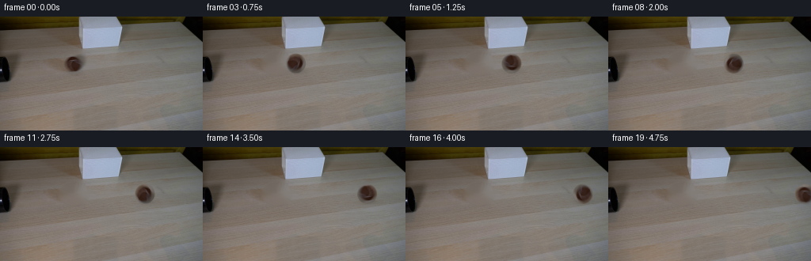
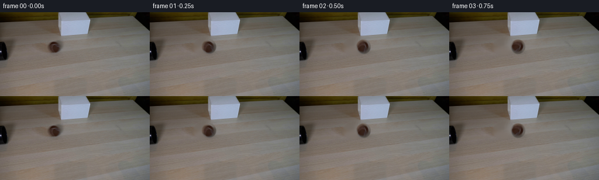
展开代码变化
--- 上一保存版本
+++ 本次保存版本
@@ -0,0 +1,133 @@
+from pathlib import Path
+
+import cv2
+import numpy as np
+from PIL import Image
+
+import artifact_io
+
+
+CASE_DIR = Path(__file__).resolve().parent
+FRAME_COUNT = 20
+FPS = 4
+WIDTH = 256
+HEIGHT = 144
+
+# Geometry measured from first_frame.png.
+BALL_X0 = 93.0
+BALL_Y = 59.2
+BALL_RADIUS = 12.2
+BALL_STEP = 8.18
+ROLL_PER_FRAME = BALL_STEP / BALL_RADIUS
+
+
+def smoothstep(edge0, edge1, value):
+ value = np.clip((value - edge0) / (edge1 - edge0), 0.0, 1.0)
+ return value * value * (3.0 - 2.0 * value)
+
+
+def make_clean_plate(source):
+ """Remove the foreground ball while preserving the wooden tabletop."""
+ bgr = cv2.cvtColor(source, cv2.COLOR_RGB2BGR)
+ mask = np.zeros((HEIGHT, WIDTH), dtype=np.uint8)
+ cv2.ellipse(mask, (93, 59), (20, 15), 0, 0, 360, 255, -1)
+ clean = cv2.inpaint(bgr, mask, 8, cv2.INPAINT_TELEA)
+
+ # The inpainted patch is deliberately softened just enough to match the
+ # low-detail tabletop without introducing a visible flat rectangle.
+ feather = cv2.GaussianBlur(mask.astype(np.float32) / 255.0, (0, 0), 2.2)
+ feather = np.clip(feather * 1.25, 0.0, 1.0)
+ bgr = (
+ bgr.astype(np.float32) * (1.0 - feather[..., None])
+ + clean.astype(np.float32) * feather[..., None]
+ )
+ return cv2.cvtColor(np.clip(bgr, 0, 255).astype(np.uint8), cv2.COLOR_BGR2RGB)
+
+
+def render_ball(source, center_x, angle):
+ """Render the source ball as a rotating, softly edged sphere."""
+ radius_px = 18
+ x0 = int(np.floor(center_x)) - radius_px
+ y0 = int(np.floor(BALL_Y)) - radius_px
+ size = radius_px * 2 + 2
+
+ yy, xx = np.mgrid[0:size, 0:size].astype(np.float32)
+ px = x0 + xx + 0.5
+ py = y0 + yy + 0.5
+ nx = (px - center_x) / BALL_RADIUS
+ ny = (py - BALL_Y) / BALL_RADIUS
+ rho = np.sqrt(nx * nx + ny * ny)
+ nz = np.sqrt(np.clip(1.0 - rho * rho, 0.0, 1.0))
+
+ # Inverse image-plane rotation gives a no-slip-looking clockwise roll.
+ ca, sa = np.cos(-angle), np.sin(-angle)
+ tx = ca * nx - sa * ny
+ ty = sa * nx + ca * ny
+
+ # Bilinear lookup into the original foreground sprite.
+ map_x = 93.0 + BALL_RADIUS * tx - 0.5
+ map_y = 59.0 + BALL_RADIUS * ty - 0.5
+ sampled = cv2.remap(
+ cv2.cvtColor(source, cv2.COLOR_RGB2BGR),
+ map_x.astype(np.float32),
+ map_y.astype(np.float32),
+ interpolation=cv2.INTER_LINEAR,
+ borderMode=cv2.BORDER_REFLECT,
+ )
+ sampled = cv2.cvtColor(sampled, cv2.COLOR_BGR2RGB).astype(np.float32)
+
+ # A narrow fuzzy rim reproduces the felt surface at this small scale.
+ alpha = 1.0 - smoothstep(0.94, 1.10, rho)
+ rim = smoothstep(0.82, 1.02, rho)
+ fuzz = 0.92 + 0.08 * np.sin(17.0 * np.arctan2(ny, nx) + 3.0 * angle)
+ alpha *= 1.0 - 0.12 * rim * fuzz
+
+ # Fixed upper-left illumination keeps the highlight stable as the felt
+ # texture rotates beneath it.
+ fixed_light = 0.88 + 0.18 * np.clip(0.58 - 0.48 * nx - 0.44 * ny, -1, 1)
+ sampled *= fixed_light[..., None]
+ sampled += (nz[..., None] - 0.72) * 7.0
+ sampled = np.clip(sampled, 0, 255)
+ return x0, y0, sampled, np.clip(alpha, 0.0, 1.0)
+
+
+def composite_ball(frame, source, center_x, angle):
+ # Soft contact shadow, offset slightly with the overhead light.
+ yy, xx = np.mgrid[0:HEIGHT, 0:WIDTH].astype(np.float32)
+ sx = (xx - (center_x + 1.4)) / 13.8
+ sy = (yy - (BALL_Y + 9.4)) / 4.7
+ shadow = np.exp(-1.65 * (sx * sx + sy * sy))
+ frame *= (1.0 - 0.105 * shadow[..., None])
+
+ x0, y0, ball, alpha = render_ball(source, center_x, angle)
+ x1, y1 = x0 + ball.shape[1], y0 + ball.shape[0]
+ vx0, vy0 = max(0, x0), max(0, y0)
+ vx1, vy1 = min(WIDTH, x1), min(HEIGHT, y1)
+ bx0, by0 = vx0 - x0, vy0 - y0
+ bx1, by1 = bx0 + (vx1 - vx0), by0 + (vy1 - vy0)
+ if vx1 <= vx0 or vy1 <= vy0:
+ return
+
+ a = alpha[by0:by1, bx0:bx1, None]
+ region = frame[vy0:vy1, vx0:vx1]
+ frame[vy0:vy1, vx0:vx1] = (
+ region * (1.0 - a) + ball[by0:by1, bx0:bx1] * a
+ )
+
+
+def generate_frames():
+ source = np.asarray(Image.open(CASE_DIR / "first_frame.png").convert("RGB"))
+ clean_plate = make_clean_plate(source)
+ frames = np.empty((FRAME_COUNT, HEIGHT, WIDTH, 3), dtype=np.uint8)
+ frames[0] = source
+
+ for index in range(1, FRAME_COUNT):
+ frame = clean_plate.astype(np.float32)
+ center_x = BALL_X0 + BALL_STEP * index
+ composite_ball(frame, source, center_x, ROLL_PER_FRAME * index)
+ frames[index] = np.clip(np.rint(frame), 0, 255).astype(np.uint8)
+ return frames
+
+
+if __name__ == "__main__":
+ artifact_io.save(generate_frames(), CASE_DIR)
候选 02播放与检查图
点击播放 · 原生 RGB 像素

展开代码变化
--- 上一保存版本
+++ 本次保存版本
@@ -14,11 +14,12 @@
HEIGHT = 144
# Geometry measured from first_frame.png.
-BALL_X0 = 93.0
-BALL_Y = 59.2
-BALL_RADIUS = 12.2
-BALL_STEP = 8.18
-ROLL_PER_FRAME = BALL_STEP / BALL_RADIUS
+BALL_X0 = 92.6
+BALL_Y = 59.0
+BALL_RX = 12.2
+BALL_RY = 11.0
+BALL_STEP = 8.15
+ROLL_PER_FRAME = BALL_STEP / BALL_RX
def smoothstep(edge0, edge1, value):
@@ -27,79 +28,81 @@
def make_clean_plate(source):
- """Remove the foreground ball while preserving the wooden tabletop."""
- bgr = cv2.cvtColor(source, cv2.COLOR_RGB2BGR)
- mask = np.zeros((HEIGHT, WIDTH), dtype=np.uint8)
- cv2.ellipse(mask, (93, 59), (20, 15), 0, 0, 360, 255, -1)
- clean = cv2.inpaint(bgr, mask, 8, cv2.INPAINT_TELEA)
+ """Remove the foreground ball while retaining the table's horizontal grain."""
+ bgr = cv2.cvtColor(source, cv2.COLOR_RGB2BGR).astype(np.float32)
+ yy, xx = np.mgrid[0:HEIGHT, 0:WIDTH].astype(np.float32)
+ rho = np.sqrt(
+ ((xx - BALL_X0) / (BALL_RX + 5.0)) ** 2
+ + ((yy - BALL_Y) / (BALL_RY + 4.0)) ** 2
+ )
+ alpha = smoothstep(1.18, 0.97, rho)
- # The inpainted patch is deliberately softened just enough to match the
- # low-detail tabletop without introducing a visible flat rectangle.
- feather = cv2.GaussianBlur(mask.astype(np.float32) / 255.0, (0, 0), 2.2)
- feather = np.clip(feather * 1.25, 0.0, 1.0)
- bgr = (
- bgr.astype(np.float32) * (1.0 - feather[..., None])
- + clean.astype(np.float32) * feather[..., None]
+ # Reuse a clean strip from the same rows. This preserves the table's
+ # directional grain better than a generic inpaint fill.
+ replacement = np.roll(bgr, 54, axis=1)
+ replacement += (
+ bgr[54:70, 76:110].mean(axis=(0, 1))
+ - replacement[54:70, 76:110].mean(axis=(0, 1))
)
- return cv2.cvtColor(np.clip(bgr, 0, 255).astype(np.uint8), cv2.COLOR_BGR2RGB)
+ clean = bgr * (1.0 - alpha[..., None]) + replacement * alpha[..., None]
+ return cv2.cvtColor(np.clip(clean, 0, 255).astype(np.uint8), cv2.COLOR_BGR2RGB)
-def render_ball(source, center_x, angle):
- """Render the source ball as a rotating, softly edged sphere."""
+def render_ball(center_x, angle):
+ """Render a softly edged brown felt sphere with a rotating surface."""
radius_px = 18
x0 = int(np.floor(center_x)) - radius_px
y0 = int(np.floor(BALL_Y)) - radius_px
- size = radius_px * 2 + 2
+ size = radius_px * 2
yy, xx = np.mgrid[0:size, 0:size].astype(np.float32)
px = x0 + xx + 0.5
py = y0 + yy + 0.5
- nx = (px - center_x) / BALL_RADIUS
- ny = (py - BALL_Y) / BALL_RADIUS
+ nx = (px - center_x) / BALL_RX
+ ny = (py - BALL_Y) / BALL_RY
rho = np.sqrt(nx * nx + ny * ny)
nz = np.sqrt(np.clip(1.0 - rho * rho, 0.0, 1.0))
- # Inverse image-plane rotation gives a no-slip-looking clockwise roll.
- ca, sa = np.cos(-angle), np.sin(-angle)
- tx = ca * nx - sa * ny
- ty = sa * nx + ca * ny
+ # Seeded low-frequency felt variation. Rotating it is equivalent to the
+ # surface texture turning beneath the fixed studio illumination.
+ rng = np.random.default_rng(148)
+ grain = rng.normal(size=(7, 7)).astype(np.float32)
+ grain = cv2.resize(grain, (size, size), interpolation=cv2.INTER_CUBIC)
+ grain /= max(float(grain.std()), 1e-6)
+ ca, sa = np.cos(angle), np.sin(angle)
+ gx = ca * nx - sa * ny
+ gy = sa * nx + ca * ny
+ map_x = (radius_px + gx * BALL_RX * 1.22).astype(np.float32)
+ map_y = (radius_px + gy * BALL_RY * 1.22).astype(np.float32)
+ grain = cv2.remap(grain, map_x, map_y, cv2.INTER_LINEAR, borderMode=cv2.BORDER_REFLECT)
- # Bilinear lookup into the original foreground sprite.
- map_x = 93.0 + BALL_RADIUS * tx - 0.5
- map_y = 59.0 + BALL_RADIUS * ty - 0.5
- sampled = cv2.remap(
- cv2.cvtColor(source, cv2.COLOR_RGB2BGR),
- map_x.astype(np.float32),
- map_y.astype(np.float32),
- interpolation=cv2.INTER_LINEAR,
- borderMode=cv2.BORDER_REFLECT,
+ base = np.array([50.0, 32.0, 24.0], dtype=np.float32)
+ color = base[None, None, :] * (0.70 + 0.36 * nz[..., None])
+ color *= 1.0 + 0.09 * grain[..., None]
+
+ highlight = np.exp(
+ -((nx + 0.04) ** 2 / 0.33**2 + (ny + 0.22) ** 2 / 0.28**2)
)
- sampled = cv2.cvtColor(sampled, cv2.COLOR_BGR2RGB).astype(np.float32)
+ color += highlight[..., None] * np.array([30.0, 30.0, 32.0], np.float32)
+ color *= (
+ 1.0 + 0.10 * np.clip(0.5 - 0.5 * nx - 0.5 * ny, 0.0, 1.0)
+ )[..., None]
+ color *= (1.0 - 0.12 * np.clip((nx + ny) / 1.6, 0.0, 1.0))[..., None]
- # A narrow fuzzy rim reproduces the felt surface at this small scale.
- alpha = 1.0 - smoothstep(0.94, 1.10, rho)
- rim = smoothstep(0.82, 1.02, rho)
- fuzz = 0.92 + 0.08 * np.sin(17.0 * np.arctan2(ny, nx) + 3.0 * angle)
- alpha *= 1.0 - 0.12 * rim * fuzz
-
- # Fixed upper-left illumination keeps the highlight stable as the felt
- # texture rotates beneath it.
- fixed_light = 0.88 + 0.18 * np.clip(0.58 - 0.48 * nx - 0.44 * ny, -1, 1)
- sampled *= fixed_light[..., None]
- sampled += (nz[..., None] - 0.72) * 7.0
- sampled = np.clip(sampled, 0, 255)
- return x0, y0, sampled, np.clip(alpha, 0.0, 1.0)
+ alpha = np.clip((1.0 - rho) / 0.14, 0.0, 1.0)
+ alpha = cv2.GaussianBlur(alpha.astype(np.float32), (3, 3), 0.55)
+ return x0, y0, np.clip(color, 0, 255), np.clip(alpha, 0.0, 1.0)
-def composite_ball(frame, source, center_x, angle):
+def composite_ball(frame, center_x, angle):
# Soft contact shadow, offset slightly with the overhead light.
yy, xx = np.mgrid[0:HEIGHT, 0:WIDTH].astype(np.float32)
- sx = (xx - (center_x + 1.4)) / 13.8
- sy = (yy - (BALL_Y + 9.4)) / 4.7
- shadow = np.exp(-1.65 * (sx * sx + sy * sy))
- frame *= (1.0 - 0.105 * shadow[..., None])
+ sx = (xx - (center_x + 1.0)) / 14.0
+ sy = (yy - (BALL_Y + 10.4)) / 4.2
+ shadow = np.exp(-1.9 * (sx * sx + sy * sy))
+ frame *= (1.0 - 0.09 * shadow[..., None])
- x0, y0, ball, alpha = render_ball(source, center_x, angle)
+ x0, y0, ball, alpha = render_ball(center_x, angle)
x1, y1 = x0 + ball.shape[1], y0 + ball.shape[0]
vx0, vy0 = max(0, x0), max(0, y0)
vx1, vy1 = min(WIDTH, x1), min(HEIGHT, y1)
@@ -124,7 +127,7 @@
for index in range(1, FRAME_COUNT):
frame = clean_plate.astype(np.float32)
center_x = BALL_X0 + BALL_STEP * index
- composite_ball(frame, source, center_x, ROLL_PER_FRAME * index)
+ composite_ball(frame, center_x, ROLL_PER_FRAME * index)
frames[index] = np.clip(np.rint(frame), 0, 255).astype(np.uint8)
return frames
候选 03播放与检查图

可观测工具轨迹
实际执行的命令与返回图片。
命令 1exit 0
/bin/bash -c "pwd && rg --files -g '"'!*__pycache__*'"' | sort"
命令 2exit 0
/bin/bash -c "sed -n '1,240p' prompt.txt"
命令 3exit 0
/bin/bash -c "sed -n '1,280p' GENERATION_RULES.md"
命令 4exit 0
/bin/bash -c 'file first_frame.png && identify first_frame.png 2>/dev/null || true && ls -la'
命令 5exit 0
/bin/bash -c "sed -n '1,260p' artifact_io.py"
命令 6exit 0
/bin/bash -c "python - <<'PY'
import importlib
for m in ['numpy','PIL','cv2','scipy','skimage','imageio','matplotlib']:
try:
mod=importlib.import_module(m)
print(m, getattr(mod,'__version__','ok'))
except Exception as e:
print(m, 'MISSING', e)
PY"命令 7exit 0
/bin/bash -c "python - <<'PY'
from PIL import Image
import numpy as np
im=Image.open('first_frame.png')
print(im.mode, im.size)
a=np.asarray(im)
print(a.shape, a.dtype, a.min(), a.max())
# report coarse brightness / color stats
for name,(x0,y0,x1,y1) in {'ball':(80,45,106,71),'table':(25,80,230,135),'shade':(98,0,152,46),'tube':(0,45,18,77),'wall':(0,0,256,13)}.items():
b=a[y0:y1,x0:x1]
print(name, b.reshape(-1,3).mean(0), b.reshape(-1,3).std(0))
PY"命令 8exit 0
/bin/bash -c "python - <<'PY'
from PIL import Image
im=Image.open('first_frame.png')
im.crop((55,30,125,95)).resize((560,520), Image.Resampling.NEAREST).save('.tmp/ball_crop.png')
im.crop((0,0,256,144)).resize((1024,576), Image.Resampling.NEAREST).save('.tmp/full_nearest.png')
PY"命令 9exit 0
/bin/bash -c "python - <<'PY'
import cv2, numpy as np
from PIL import Image
src=cv2.imread('first_frame.png')
for rx,ry,name in [(12,11,'a'),(13,12,'b'),(14,13,'c'),(15,14,'d')]:
mask=np.zeros(src.shape[:2],np.uint8)
cv2.ellipse(mask,(93,58),(rx,ry),0,0,360,255,-1)
clean=cv2.inpaint(src,mask,5,cv2.INPAINT_TELEA)
crop=clean[38:80,68:118]
cv2.imwrite(f'.tmp/inpaint_{name}.png',cv2.resize(crop,None,fx=8,fy=8,interpolation=cv2.INTER_NEAREST))
PY"命令 10exit 0
/bin/bash -c "python - <<'PY'
from PIL import Image
import numpy as np
im=np.array(Image.open('first_frame.png'))
# print selected pixel rows around ball as hex/color summary
for y in [45,48,50,52,54,56,58,60,62,64,66,68,70]:
print(y, [tuple(im[y,x]) for x in [78,82,86,90,93,96,100,104,108]])
PY"命令 11exit 0
/bin/bash -c "python - <<'PY'
import cv2, numpy as np
im=cv2.imread('first_frame.png')
# grayscale gradients to inspect ball bounds
g=cv2.cvtColor(im,cv2.COLOR_BGR2GRAY)
for y in range(42,78,2):
print(f'{y:3}', ' '.join(f'{g[y,x]:3}' for x in range(74,114,2)))
PY"命令 12exit 0
/bin/bash -c "python - <<'PY'
import cv2,numpy as np
im=cv2.imread('first_frame.png').astype(np.float32)
# directional derivatives around ball candidate bounds
for p in [(80,54),(78,58),(76,62),(80,66),(84,69),(90,71),(98,70),(105,68),(108,64),(110,58),(108,53),(103,50),(96,48),(90,49)]:
x,y=p
dx=im[y,x+1].mean()-im[y,x-1].mean(); dy=im[y+1,x].mean()-im[y-1,x].mean()
print(p, f'val {im[y,x].mean():.1f}', f'dx {dx:.1f}',f'dy {dy:.1f}')
PY"命令 13exit 0
/bin/bash -c "python - <<'PY'
import cv2,numpy as np
im=cv2.imread('first_frame.png')
# sample local ball region with a grid of pixel RGB and neighborhood smoothness
for y in range(46,73,2):
row=[]
for x in range(76,112,2):
b,g,r=im[y,x]
row.append(f'{r:02x}{g:02x}{b:02x}')
print(y,' '.join(row))
PY"命令 14exit 0
/bin/bash -c "python - <<'PY'
import cv2,numpy as np
from PIL import Image
im=cv2.imread('first_frame.png')
gray=cv2.cvtColor(im,cv2.COLOR_BGR2GRAY).astype(np.float32)
# approximate background using broad horizontal blur excluding ball not trivial; use median of table rows
bg=cv2.GaussianBlur(gray,(31,31),0)
diff=bg-gray
Y,X=np.mgrid[:144,:256]
ell=((X-93)/15.0)**2+((Y-59)/12.0)**2 <= 1
alpha=np.clip((diff-4)/35,0,1)*ell
alpha=cv2.GaussianBlur(alpha.astype(np.float32),(3,3),0)
rgba=np.dstack([cv2.cvtColor(im,cv2.COLOR_BGR2RGB),alpha*255]).astype(np.uint8)
cv2.imwrite('.tmp/ball_sprite_vis.png',cv2.resize(rgba[43:75,74:112],None,fx=8,fy=8,interpolation=cv2.INTER_NEAREST))
# mask view
cv2.imwrite('.tmp/mask.png',(alpha[43:75,74:112]*255).astype(np.uint8))
print('alpha pixels', (alpha>0.1).sum(), 'max',alpha.max())
PY"命令 15exit 0
/bin/bash -c "python - <<'PY'
import cv2,numpy as np
im=cv2.imread('first_frame.png')
for method,name in [(cv2.INPAINT_TELEA,'telea'),(cv2.INPAINT_NS,'ns')]:
for rx,ry in [(18,14),(20,15),(22,16)]:
mask=np.zeros(im.shape[:2],np.uint8)
cv2.ellipse(mask,(93,59),(rx,ry),0,0,360,255,-1)
out=cv2.inpaint(im,mask,7,method)
cv2.imwrite(f'.tmp/clean_{name}_{rx}.png',cv2.resize(out[34:84,63:123],None,fx=8,fy=8,interpolation=cv2.INTER_NEAREST))
PY"命令 16exit 0
/bin/bash -c "python - <<'PY'
import cv2,numpy as np
im=cv2.imread('first_frame.png')
crop=im[44:75,74:113]
lab=cv2.cvtColor(crop,cv2.COLOR_BGR2LAB)
l,a,b=cv2.split(lab)
cl=cv2.createCLAHE(clipLimit=3.0,tileGridSize=(4,4)).apply(l)
out=cv2.cvtColor(cv2.merge([cl,a,b]),cv2.COLOR_LAB2BGR)
cv2.imwrite('.tmp/ball_contrast.png',cv2.resize(out,None,fx=12,fy=12,interpolation=cv2.INTER_CUBIC))
PY"命令 17exit 0
/bin/bash -c "python - <<'PY'
import cv2,numpy as np
im=cv2.imread('first_frame.png')
mask=np.zeros(im.shape[:2],np.uint8)
cv2.ellipse(mask,(93,59),(21,16),0,0,360,255,-1)
out=cv2.inpaint(im,mask,8,cv2.INPAINT_TELEA)
cv2.imwrite('.tmp/clean_full.png',out)
cv2.imwrite('.tmp/clean_full_up.png',cv2.resize(out,None,fx=4,fy=4,interpolation=cv2.INTER_CUBIC))
PY"命令 18exit 0
/bin/bash -c 'python generate.py'
命令 19exit 0
/bin/bash -c "python - <<'PY'
from PIL import Image
for i in [0,1,4,8,12,16,19]:
im=Image.open(f'frames/{i:02d}.png')
im.crop((max(0,int(70+8.18*i)-22),35,min(256,int(70+8.18*i)+25),82)).resize((470,470),Image.Resampling.NEAREST).save(f'.tmp/f{i:02d}.png')
PY"命令 20exit 0
/bin/bash -c "python - <<'PY'
from PIL import Image
for i in [0,1,2,3,4,8,12,16,19]:
im=Image.open(f'frames/{i:02d}.png')
x=int(93+8.18*i)
im.crop((max(0,x-15),42,min(256,x+16),77)).resize((310,350),Image.Resampling.NEAREST).save(f'.tmp/b{i:02d}.png')
PY"命令 21exit 0
/bin/bash -c "python - <<'PY'
import numpy as np
from PIL import Image
A=np.array(Image.open('first_frame.png'))
for i in [1,2,3,4,8,12,16,19]:
B=np.array(Image.open(f'frames/{i:02d}.png'))
# estimate ball center weighted by local darkness relative to local row median
y0,y1=45,74; x0,x1=max(0,int(93+8.18*i)-22),min(256,int(93+8.18*i)+23)
r=B[y0:y1,x0:x1].mean(2)
# detect only likely ball pixels under 88
ys,xs=np.where(r<85)
if len(xs):
print(i, 'n',len(xs),'bbox',(xs.min()+x0,ys.min()+y0,xs.max()+x0,ys.max()+y0),'centroid',(xs.mean()+x0,ys.mean()+y0), 'mean',r[ys,xs].mean())
else: print(i,'none')
PY"命令 22exit 1
/bin/bash -c "python - <<'PY'
import numpy as np
from PIL import Image
im=np.array(Image.open('frames/12.png')).astype(float)
y0,y1=45,75;x0,x1=178,204
g=im[y0:y1,x0:x1].mean(2)
# print values down center and rows
for y in range(y0,y1,2):
print(y, ' '.join(f'{g[y-y0,x]:3.0f}' for x in range(x0,x1,2)))
PY"命令 23exit 0
/bin/bash -c "python - <<'PY'
import numpy as np
from PIL import Image
im=np.array(Image.open('frames/12.png')).astype(float)
y0,y1=45,75;x0,x1=178,204
g=im[y0:y1,x0:x1].mean(2)
for y in range(y0,y1,2):
print(y, ' '.join(f'{g[y-y0,x-x0]:3.0f}' for x in range(x0,x1,2)))
PY"命令 24exit 0
/bin/bash -c "python - <<'PY'
import cv2,numpy as np
im=cv2.imread('first_frame.png')
# crop clean nearest and normal enlarged using lanczos
for name,src in [('source',im),('clean',cv2.imread('.tmp/clean_full.png'))]:
crop=src[43:75,76:111]
cv2.imwrite(f'.tmp/{name}_lanczos.png',cv2.resize(crop,None,fx=12,fy=12,interpolation=cv2.INTER_LANCZOS4))
PY"命令 25exit 0
/bin/bash -c "python - <<'PY'
import cv2,numpy as np
from PIL import Image
im=cv2.imread('first_frame.png')
# find dark connected component and bounds
g=cv2.cvtColor(im,cv2.COLOR_BGR2GRAY)
m=(g<75).astype(np.uint8)
n,labels,stats,cent=cv2.connectedComponentsWithStats(m)
for i in range(1,n):
x,y,w,h,a=stats[i]
if a>5: print(i,x,y,w,h,a,cent[i])
PY"命令 26exit 0
/bin/bash -c "python - <<'PY'
import cv2,numpy as np
im=cv2.imread('first_frame.png')
# simple feature-guided sphere: take larger crop around ball, add fixed shading and fuzz edge
# Try different source radii and display side by side.
canvas=np.full((60,400,3),160,np.uint8)
for j,(cx,cy,r) in enumerate([(93,59,12),(93,59,13),(93,59,14),(93,59,15)]):
out=np.full((60,80,3),120,np.uint8)
S=np.zeros((60,80),np.uint8)
yy,xx=np.mgrid[0:60,0:80]
nx=(xx-40)/r; ny=(yy-30)/r
rho=np.sqrt(nx*nx+ny*ny)
alpha=np.clip((1.05-rho)/.12,0,1)
# sample original ball area
mapx=(93+nx*r).astype(np.float32);mapy=(59+ny*r).astype(np.float32)
samp=cv2.remap(im,mapx,mapy,cv2.INTER_LINEAR,borderMode=cv2.BORDER_REFLECT)
out=(out*(1-alpha[...,None])+samp*alpha[...,None]).astype(np.uint8)
canvas[:,j*100:j*100+80]=out
cv2.imwrite('.tmp/sizes.png',cv2.resize(canvas,None,fx=4,fy=4,interpolation=cv2.INTER_NEAREST))
PY"命令 27exit 0
/bin/bash -c "python - <<'PY'
import numpy as np
from PIL import Image
im=np.array(Image.open('first_frame.png')).astype(float)
for cx,cy,r in [(93,59,12),(93,59,13),(93,59,14),(93,59,15)]:
Y,X=np.mgrid[:144,:256]; rho=np.sqrt(((X-cx)/r)**2+((Y-cy)/r)**2)
mask=rho<.95
g=im[mask].mean(1)
print(r, 'n',len(g),'min',g.min(),'p10',np.percentile(g,10),'mean',g.mean(),'p90',np.percentile(g,90))
PY"命令 28exit 0
/bin/bash -c "python - <<'PY'
import numpy as np
from PIL import Image
im=np.array(Image.open('first_frame.png')).astype(float)
g=im.mean(2)
for cx,cy in [(92,59),(93,59),(94,59),(93,58),(93,60)]:
Y,X=np.mgrid[:144,:256]; rho=np.sqrt(((X-cx)/12.2)**2+((Y-cy)/12.2)**2)
m=rho<.85
print(cx,cy, g[m].mean(), g[m].std())
PY"命令 29exit 0
/bin/bash -c "python - <<'PY'
import numpy as np
from PIL import Image
im=np.array(Image.open('first_frame.png')).astype(float)
g=im.mean(2)
# print 45x25 ascii around ball
chars=' .:-=+*#%@'
for y in range(44,76):
print(f'{y:3}', ''.join(chars[min(9,int(max(0,(125-g[y,x])/10)))] for x in range(74,114)))
PY"命令 30exit 0
/bin/bash -c "python - <<'PY'
import numpy as np
from PIL import Image
im=np.array(Image.open('first_frame.png')).astype(float)
g=im.mean(2)
chars=' .:-=+*#%@'
for y in range(48,72):
print(f'{y:3}', ''.join(chars[min(9,max(0,int((130-g[y,x])/7)))] for x in range(80,109)))
PY"命令 31exit 0
/bin/bash -c "python - <<'PY'
import cv2,numpy as np
im=cv2.imread('first_frame.png').astype(np.float32)
g=cv2.cvtColor(im.astype(np.uint8),cv2.COLOR_BGR2GRAY).astype(np.float32)
Y,X=np.mgrid[:144,:256]
# background estimate from left/right edge within ball bbox via per-row linear fit
bg=np.zeros_like(g)
for y in range(45,74):
vals=[]
for x in list(range(72,78))+list(range(110,116)):
vals.append((x,g[y,x]))
coef=np.polyfit([p[0] for p in vals],[p[1] for p in vals],1)
bg[y]=np.polyval(coef,X[y])
D=bg-g
for th in [10,15,20,25,30,35,40,45,50]:
m=(D>th)&(Y>=48)&(Y<=70)&(X>=78)&(X<=109)
ys,xs=np.where(m)
print(th,len(xs), (xs.min(),ys.min(),xs.max(),ys.max()) if len(xs) else '')
# save contrast heat
vis=np.clip(D*4+70,0,255).astype(np.uint8)
cv2.imwrite('.tmp/diff_ball.png',cv2.resize(vis[44:75,76:112],None,fx=10,fy=10,interpolation=cv2.INTER_NEAREST))
PY"命令 32exit 0
/bin/bash -c "python - <<'PY'
import cv2,numpy as np
im=cv2.imread('first_frame.png')
# remove shadow/ball with mask based on diff? use ellipse broad enough, inpaint
mask=np.zeros(im.shape[:2],np.uint8)
cv2.ellipse(mask,(93,59),(24,18),0,0,360,255,-1)
out=cv2.inpaint(im,mask,10,cv2.INPAINT_TELEA)
cv2.imwrite('.tmp/clean_big.png',out)
cv2.imwrite('.tmp/clean_big_up.png',cv2.resize(out[38:84,66:121],None,fx=8,fy=8,interpolation=cv2.INTER_CUBIC))
PY"命令 33exit 0
/bin/bash -c "python - <<'PY'
import numpy as np
from PIL import Image
im=np.array(Image.open('first_frame.png')).astype(float)
# Sample gradient along the shadow's lower boundary and fit ellipse-like points manually via low threshold.
g=im.mean(2)
# print horizontal profile at rows 66-71
for y in range(64,72):
print('row',y,[(x,round(g[y,x])) for x in range(74,112,2)])
PY"命令 34exit 0
/bin/bash -c "python - <<'PY'
from PIL import Image
im=Image.open('first_frame.png')
im.crop((70,40,116,75)).resize((736,560),Image.Resampling.NEAREST).save('.tmp/src_ball_nearest.png')
PY"命令 35exit 0
/bin/bash -c "python - <<'PY'
import numpy as np
from PIL import Image
im=np.array(Image.open('first_frame.png')).astype(float)
g=im.mean(2)
for y in range(47,73):
pts=[]
for x in range(76,112):
if g[y,x]<100: pts.append(x)
if pts: print(y, min(pts), max(pts), len(pts))
PY"命令 36exit 0
/bin/bash -c "python - <<'PY'
import numpy as np
from PIL import Image
im=np.array(Image.open('first_frame.png')).astype(float)
g=im.mean(2)
for y in range(47,73):
vals=[x for x in range(80,110) if g[y,x]<100]
print(y, (min(vals),max(vals)) if vals else None)
PY"命令 37exit 0
/bin/bash -c "python - <<'PY'
import cv2,numpy as np
im=cv2.imread('first_frame.png')
# Create a corrected clean plate by filling table with horizontal extrapolation then smooth
h,w=im.shape[:2]
mask=np.zeros((h,w),np.uint8)
cv2.ellipse(mask,(93,60),(18,14),0,0,360,255,-1)
# reconstruct using per-row interpolated endpoints
out=im.copy()
for y in range(42,78):
xL,xR=73,113
vL=im[y,xL-3:xL].mean(0)
vR=im[y,xR:xR+3].mean(0)
for x in range(xL,xR):
t=(x-xL)/(xR-xL)
out[y,x]=((1-t)*vL+t*vR).astype(np.uint8)
# smooth the rectangle horizontally/vertically
roi=out[42:78,73:113]
roi=cv2.GaussianBlur(roi,(0,0),3)
out[42:78,73:113]=roi
cv2.imwrite('.tmp/clean_manual.png',out)
cv2.imwrite('.tmp/clean_manual_up.png',cv2.resize(out[36:84,66:120],None,fx=8,fy=8,interpolation=cv2.INTER_CUBIC))
PY"命令 38exit 0
/bin/bash -c "python - <<'PY'
import numpy as np, cv2
from PIL import Image
import generate
src=np.array(Image.open('first_frame.png'))
plate=generate.make_clean_plate(src).astype(np.float32)
for i in [0,1,2,4]:
f=plate.copy(); generate.composite_ball(f,src,93+generate.BALL_STEP*i,generate.ROLL_PER_FRAME*i)
out=np.clip(f,0,255).astype(np.uint8)
cv2.imwrite(f'.tmp/synth{i}.png',cv2.cvtColor(out,cv2.COLOR_RGB2BGR))
# stats dark around expected
x=int(93+generate.BALL_STEP*i); roi=out[45:75,max(0,x-20):min(256,x+21)].mean(2)
print(i, 'dark<75', (roi<75).sum(), 'bbox', end=' ')
ys,xs=np.where(roi<75)
if len(xs): print((xs.min()+max(0,x-20),ys.min()+45,xs.max()+max(0,x-20),ys.max()+45))
else: print(None)
# montage source ball and synthetic frames
imgs=[]
for path,cx in [('first_frame.png',93),('.tmp/synth1.png',101),('.tmp/synth2.png',109),('.tmp/synth4.png',126)]:
a=cv2.imread(path); crop=a[42:76,cx-18:cx+19]; imgs.append(cv2.resize(crop,None,fx=8,fy=8,interpolation=cv2.INTER_NEAREST))
cv2.imwrite('.tmp/compare_balls.png',np.hstack(imgs))
PY"命令 39exit 1
/bin/bash -c "python - <<'PY'
import cv2,numpy as np
from PIL import Image
src=np.array(Image.open('first_frame.png')).astype(np.float32)
# clean plate using feathered row interpolation
h,w=src.shape[:2]
out=src.copy()
xL,xR=70,117; yT,yB=40,79
for y in range(yT,yB):
vL=src[y,xL-5:xL].mean(0); vR=src[y,xR:xR+5].mean(0)
for x in range(xL,xR):
t=(x-xL)/(xR-xL)
out[y,x]=(1-t)*vL+t*vR
roi=out[yT:yB,xL:xR]
roi=cv2.GaussianBlur(roi,(0,0),2.0)
out[yT:yB,xL:xR]=roi
# feather only ellipse area over src
Y,X=np.mgrid[:h,:w]
rho=np.sqrt(((X-93)/25)**2+((Y-59)/20)**2)
a=np.clip((1.18-rho)/.18,0,1)[...,None]
plate=src*(1-a)+out*a
canvas=np.full((60,5*90,3),150,np.uint8)
for j,(srad,light) in enumerate([(8,1.0),(9,1.0),(10,1.0),(9,1.15),(10,1.15)]):
cx,cy=45,30
yy,xx=np.mgrid[0:60,0:90]
rx,ry=12.4,11.2
nx=(xx-cx)/rx;ny=(yy-cy)/ry
rr=np.sqrt(nx*nx+ny*ny);nz=np.sqrt(np.clip(1-rr*rr,0,1))
mapx=(93+srad*nx).astype(np.float32);mapy=(59.5+srad*ny).astype(np.float32)
samp=cv2.remap(src,mapx,mapy,cv2.INTER_LINEAR,borderMode=cv2.BORDER_REFLECT)
# sample avg and scale to target dark body
target=np.array([57,45,38])
mean=samp[rr<.8].mean(0)
samp=samp*target/mean
# fixed shading
shade=.86+.28*np.clip(.6-.5*nx-.45*ny,0,1)
samp*=shade[...,None]*light
alpha=np.clip((1.04-rr)/.13,0,1)*(1-.12*np.clip((rr-.82)/.2,0,1))
alpha=cv2.GaussianBlur(alpha.astype(np.float32),(3,3),0)
ball=plate[25:55,cx-20:cx+20].copy()
ball=ball*(1-alpha[...,None])+np.clip(samp,0,255)*alpha[...,None]
canvas[:,j*90:j*90+80]=ball
cv2.imwrite('.tmp/ball_variants.png',cv2.resize(canvas,None,fx=5,fy=5,interpolation=cv2.INTER_NEAREST))
cv2.imwrite('.tmp/plate_test.png',cv2.cvtColor(plate.astype(np.uint8),cv2.COLOR_RGB2BGR))
PY"命令 40exit 1
/bin/bash -c "python - <<'PY'
import cv2,numpy as np
from PIL import Image
src=np.array(Image.open('first_frame.png')).astype(np.float32)
h,w=src.shape[:2]
out=src.copy(); xL,xR=70,117; yT,yB=40,79
for y in range(yT,yB):
vL=src[y,xL-5:xL].mean(0); vR=src[y,xR:xR+5].mean(0)
for x in range(xL,xR):
t=(x-xL)/(xR-xL); out[y,x]=(1-t)*vL+t*vR
out[yT:yB,xL:xR]=cv2.GaussianBlur(out[yT:yB,xL:xR],(0,0),2.0)
Y,X=np.mgrid[:h,:w]; rho=np.sqrt(((X-93)/25)**2+((Y-59)/20)**2)
a=np.clip((1.18-rho)/.18,0,1)[...,None]; plate=src*(1-a)+out*a
canvas=np.full((60,5*90,3),150,np.uint8)
for j,(srad,light) in enumerate([(8,1.0),(9,1.0),(10,1.0),(9,1.15),(10,1.15)]):
cx,cy=45,30; yy,xx=np.mgrid[0:60,0:90]
rx,ry=12.4,11.2; nx=(xx-cx)/rx;ny=(yy-cy)/ry
rr=np.sqrt(nx*nx+ny*ny);nz=np.sqrt(np.clip(1-rr*rr,0,1))
mapx=(93+srad*nx).astype(np.float32);mapy=(59.5+srad*ny).astype(np.float32)
samp=cv2.remap(src,mapx,mapy,cv2.INTER_LINEAR,borderMode=cv2.BORDER_REFLECT)
target=np.array([57,45,38]); mean=samp[rr<.8].mean(0); samp=samp*target/mean
shade=.86+.28*np.clip(.6-.5*nx-.45*ny,0,1); samp*=shade[...,None]*light
alpha=np.clip((1.04-rr)/.13,0,1)*(1-.12*np.clip((rr-.82)/.2,0,1)); alpha=cv2.GaussianBlur(alpha.astype(np.float32),(3,3),0)
bg=plate[cy-20:cy+20,cx-20:cx+20].copy()
ball=bg*(1-alpha[...,None])+np.clip(samp,0,255)*alpha[...,None]
canvas[0:40,j*90:j*90+40]=ball
cv2.imwrite('.tmp/ball_variants.png',cv2.resize(canvas,None,fx=5,fy=5,interpolation=cv2.INTER_NEAREST))
cv2.imwrite('.tmp/plate_test.png',cv2.cvtColor(plate.astype(np.uint8),cv2.COLOR_RGB2BGR))
PY"命令 41exit 0
/bin/bash -c "python - <<'PY'
import cv2,numpy as np
from PIL import Image
src=np.array(Image.open('first_frame.png')).astype(np.float32)
h,w=src.shape[:2]
out=src.copy(); xL,xR=70,117; yT,yB=40,79
for y in range(yT,yB):
vL=src[y,xL-5:xL].mean(0); vR=src[y,xR:xR+5].mean(0)
for x in range(xL,xR):
t=(x-xL)/(xR-xL); out[y,x]=(1-t)*vL+t*vR
out[yT:yB,xL:xR]=cv2.GaussianBlur(out[yT:yB,xL:xR],(0,0),2.0)
Y,X=np.mgrid[:h,:w]; rho=np.sqrt(((X-93)/25)**2+((Y-59)/20)**2)
a=np.clip((1.18-rho)/.18,0,1)[...,None]; plate=src*(1-a)+out*a
canvas=np.full((60,5*90,3),150,np.uint8)
for j,(srad,light) in enumerate([(8,1.0),(9,1.0),(10,1.0),(9,1.15),(10,1.15)]):
cx,cy=45,30; yy,xx=np.mgrid[0:60,0:90]
rx,ry=12.4,11.2; nx=(xx-cx)/rx;ny=(yy-cy)/ry
rr=np.sqrt(nx*nx+ny*ny);nz=np.sqrt(np.clip(1-rr*rr,0,1))
mapx=(93+srad*nx).astype(np.float32);mapy=(59.5+srad*ny).astype(np.float32)
samp=cv2.remap(src,mapx,mapy,cv2.INTER_LINEAR,borderMode=cv2.BORDER_REFLECT)
target=np.array([57,45,38]); mean=samp[rr<.8].mean(0); samp=samp*target/mean
shade=.86+.28*np.clip(.6-.5*nx-.45*ny,0,1); samp*=shade[...,None]*light
alpha=np.clip((1.04-rr)/.13,0,1)*(1-.12*np.clip((rr-.82)/.2,0,1)); alpha=cv2.GaussianBlur(alpha.astype(np.float32),(3,3),0)
ballbg=plate[cy-20:cy+20,cx-20:cx+20]
alpha_crop=alpha[cy-20:cy+20,cx-20:cx+20]
samp_crop=samp[cy-20:cy+20,cx-20:cx+20]
ball=ballbg*(1-alpha_crop[...,None])+np.clip(samp_crop,0,255)*alpha_crop[...,None]
canvas[0:40,j*90:j*90+40]=ball
cv2.imwrite('.tmp/ball_variants.png',cv2.resize(canvas,None,fx=5,fy=5,interpolation=cv2.INTER_NEAREST))
cv2.imwrite('.tmp/plate_test.png',cv2.cvtColor(plate.astype(np.uint8),cv2.COLOR_RGB2BGR))
PY"命令 42exit 0
/bin/bash -c "python - <<'PY'
import cv2,numpy as np
im=cv2.imread('first_frame.png')
# ball sprite: exact source crop with smooth alpha; use gradient along bottom to infer ellipse
crop=im[46:73,78:109]
cv2.imwrite('.tmp/crop_raw.png',cv2.resize(crop,None,fx=12,fy=12,interpolation=cv2.INTER_NEAREST))
# remove mean color of outer ring
PY"命令 43exit 0
/bin/bash -c "python - <<'PY'
import cv2,numpy as np
from PIL import Image
im=np.array(Image.open('first_frame.png')).astype(np.float32)
# prototype sphere from fitted smooth noise + brown felt color, using surface normals
out=np.zeros((30,34,3),np.uint8)
cx,cy=17,15; rx,ry=12.5,11.0
yy,xx=np.mgrid[:30,:34]; nx=(xx-cx)/rx; ny=(yy-cy)/ry; rr=np.sqrt(nx*nx+ny*ny);nz=np.sqrt(np.clip(1-rr*rr,0,1))
# base felt brown with low-frequency noise generated deterministically in pixel coordinates
rng=np.random.default_rng(12)
small=rng.normal(size=(15,17)); noise=cv2.resize(small,(34,30),interpolation=cv2.INTER_CUBIC);noise=cv2.GaussianBlur(noise,(0,0),1.2);noise/=max(abs(noise).max(),1e-6)
base=np.array([62,47,37],np.float32)
col=base*(1+0.16*noise[...,None])*(.86+.30*np.clip(.55-.55*nx-.4*ny,0,1))[...,None]
col+=nz[...,None]*np.array([8,5,3])
alpha=np.clip((1.03-rr)/.1,0,1)
alpha=cv2.GaussianBlur(alpha.astype(np.float32),(3,3),.6)
# composite on plate test
plate=cv2.imread('.tmp/plate_test.png')
bg=plate[45:75,76:110].astype(np.float32)
res=bg*(1-alpha[...,None])+col*alpha[...,None]
cv2.imwrite('.tmp/synthetic_ball.png',cv2.resize(np.clip(res,0,255).astype(np.uint8),None,fx=14,fy=14,interpolation=cv2.INTER_NEAREST))
PY"命令 44exit 0
/bin/bash -c "python - <<'PY'
import cv2,numpy as np
im=cv2.imread('first_frame.png').astype(np.float32)
# fit approximate foreground ellipse from thresholded darkness, robustly report center/size
g=cv2.cvtColor(im.astype(np.uint8),cv2.COLOR_BGR2GRAY)
m=(g<100).astype(np.uint8); m[:47]=0;m[71:]=0;m[:,:78]=0;m[:,110:]=0
ys,xs=np.where(m)
print('all',xs.mean(),ys.mean(),xs.min(),xs.max(),ys.min(),ys.max())
# fit ellipse contour from threshold
cnts,_=cv2.findContours(m,cv2.RETR_EXTERNAL,cv2.CHAIN_APPROX_NONE)
for c in cnts:
if cv2.contourArea(c)>30:
print('ellipse',cv2.fitEllipse(c),'area',cv2.contourArea(c))
PY"命令 45exit 0
/bin/bash -c "python - <<'PY'
import cv2,numpy as np
im=cv2.imread('first_frame.png')
g=cv2.cvtColor(im,cv2.COLOR_BGR2GRAY)
for th in [80,90,100,110]:
m=(g<th).astype(np.uint8);m[:46]=0;m[72:]=0;m[:,:77]=0;m[:,110:]=0
cnts,_=cv2.findContours(m,cv2.RETR_EXTERNAL,cv2.CHAIN_APPROX_NONE)
c=max(cnts,key=cv2.contourArea)
print(th,cv2.fitEllipse(c),cv2.contourArea(c))
PY"命令 46exit 0
/bin/bash -c "python - <<'PY'
from PIL import Image
im=Image.open('first_frame.png')
# radial profile around fitted center, bilinear samples at angles
import numpy as np
A=np.array(im).astype(float);g=A.mean(2)
for ang in range(0,360,30):
t=np.deg2rad(ang)
print(ang, [round(g[int(round(59+np.sin(t)*r)),int(round(93+np.cos(t)*r))],0) for r in range(7,18,2)])
PY"命令 47exit 0
/bin/bash -c "python - <<'PY'
import cv2,numpy as np
from PIL import Image
src=np.array(Image.open('first_frame.png')).astype(np.float32)
# use row interpolation plate generated earlier as plate
plate=cv2.cvtColor(cv2.imread('.tmp/plate_test.png'),cv2.COLOR_BGR2RGB).astype(np.float32)
# Extract ball interior via affine sampling of the source, mapping ellipse to circle.
# Preserve measured color but prevent outside tabletop: sample only radius<0.72 then mirror at edges.
R=16
yy,xx=np.mgrid[0:2*R,0:2*R];nx=(xx-R+.5)/12.2;ny=(yy-R+.5)/10.8;rr=np.hypot(nx,ny)
sx=93+12.2*nx;sy=59+10.8*ny
mapx=np.clip(sx,84,102).astype(np.float32);mapy=np.clip(sy,50,68).astype(np.float32)
samp=cv2.remap(src,mapx,mapy,cv2.INTER_LINEAR).astype(np.float32)
# normalize interior toward source brown rather than tabletop
mean=samp[rr<.6].mean(0); target=np.array([55,42,34]); samp*=target/mean
light=.84+.31*np.clip(.62-.52*nx-.44*ny,0,1)
samp*=light[...,None]
alpha=np.clip((1.0-rr)/.12,0,1)*(1-.14*np.clip((rr-.78)/.22,0,1))
alpha=cv2.GaussianBlur(alpha.astype(np.float32),(3,3),.55)
# composite in frame
frame=plate.copy(); x0=93-R;y0=59-R
bg=frame[y0:y0+2*R,x0:x0+2*R]
ball=bg*(1-alpha[...,None])+np.clip(samp,0,255)*alpha[...,None]
frame[y0:y0+2*R,x0:x0+2*R]=ball
cv2.imwrite('.tmp/ball_new.png',cv2.cvtColor(np.clip(frame,0,255).astype(np.uint8),cv2.COLOR_RGB2BGR))
cv2.imwrite('.tmp/ball_new_up.png',cv2.resize(cv2.cvtColor(np.clip(frame[42:77,75:112],0,255).astype(np.uint8),cv2.COLOR_RGB2BGR),None,fx=12,fy=12,interpolation=cv2.INTER_NEAREST))
PY"命令 48exit 0
/bin/bash -c "python - <<'PY'
import cv2,numpy as np
from PIL import Image
src=np.array(Image.open('first_frame.png')).astype(np.float32)
plate=cv2.cvtColor(cv2.imread('.tmp/plate_test.png'),cv2.COLOR_BGR2RGB).astype(np.float32)
R=18
yy,xx=np.mgrid[0:2*R,0:2*R];nx=(xx-R+.5)/12.3;ny=(yy-R+.5)/11.2;rr=np.hypot(nx,ny)
sx=93+12.3*nx;sy=59+11.2*ny
mapx=np.clip(sx,84,102).astype(np.float32);mapy=np.clip(sy,50,68).astype(np.float32)
samp=cv2.remap(src,mapx,mapy,cv2.INTER_LINEAR).astype(np.float32)
mean=samp[rr<.55].mean(0); target=np.array([55,42,34]); samp*=target/mean
light=.84+.31*np.clip(.62-.52*nx-.44*ny,0,1);samp*=light[...,None]
alpha=np.clip((1.0-rr)/.16,0,1)*(1-.13*np.clip((rr-.77)/.23,0,1));alpha=cv2.GaussianBlur(alpha.astype(np.float32),(3,3),.65)
frame=plate.copy();x0=93-R;y0=59-R;bg=frame[y0:y0+2*R,x0:x0+2*R]
frame[y0:y0+2*R,x0:x0+2*R]=bg*(1-alpha[...,None])+np.clip(samp,0,255)*alpha[...,None]
cv2.imwrite('.tmp/ball_new2.png',cv2.cvtColor(np.clip(frame,0,255).astype(np.uint8),cv2.COLOR_RGB2BGR))
cv2.imwrite('.tmp/ball_new2_up.png',cv2.resize(cv2.cvtColor(np.clip(frame[42:77,75:112],0,255).astype(np.uint8),cv2.COLOR_RGB2BGR),None,fx=12,fy=12,interpolation=cv2.INTER_NEAREST))
PY"命令 49exit 0
/bin/bash -c "python - <<'PY'
import cv2,numpy as np
im=cv2.imread('first_frame.png')
for x,y in [(92,59),(92,60),(92,58),(94,60),(90,60),(96,60),(90,55),(94,55),(90,64),(94,64),(86,59),(98,59)]:
patch=im[y-1:y+2,x-1:x+2]
print((x,y),patch.reshape(-1,3).mean(0)[::-1], patch[1,1][::-1])
PY"命令 50exit 1
/bin/bash -c "python - <<'PY'
import cv2,numpy as np
from PIL import Image
src=np.array(Image.open('first_frame.png')).astype(np.float32)
plate=cv2.cvtColor(cv2.imread('.tmp/plate_test.png'),cv2.COLOR_BGR2RGB).astype(np.float32)
R=18; yy,xx=np.mgrid[0:2*R,0:2*R];nx=(xx-R+.5)/12.4;ny=(yy-R+.5)/11.2;rr=np.hypot(nx,ny)
# target source ball interior sampled using polar coordinates normalized to ellipse
sx=93+12.4*nx;sy=59+11.2*ny
mapx=np.clip(sx,84,102).astype(np.float32);mapy=np.clip(sy,50,68).astype(np.float32)
samp=cv2.remap(src,mapx,mapy,cv2.INTER_LINEAR).astype(np.float32)
# derive shading multiplier relative to expected dark brown, clamping only overbright table pixels
lum=samp.mean(2)
scale=np.clip(lum/52.0,.55,1.05)
base=np.array([52,32,23],np.float32)
samp=base*scale[...,None]
# add slight highlight around upper-left center from observed gray-brown patch
hl=np.exp(-((nx+.12)**2/(.22**2)+(ny+.16)**2/(.2**2)))*np.array([26,30,30])
samp+=hl[...,None]
alpha=np.clip((1.0-rr)/.16,0,1)*(1-.13*np.clip((rr-.77)/.23,0,1));alpha=cv2.GaussianBlur(alpha.astype(np.float32),(3,3),.65)
frame=plate.copy();x0=93-R;y0=59-R;bg=frame[y0:y0+2*R,x0:x0+2*R]
frame[y0:y0+2*R,x0:x0+2*R]=bg*(1-alpha[...,None])+np.clip(samp,0,255)*alpha[...,None]
cv2.imwrite('.tmp/ball_new3.png',cv2.cvtColor(np.clip(frame,0,255).astype(np.uint8),cv2.COLOR_RGB2BGR))
cv2.imwrite('.tmp/ball_new3_up.png',cv2.resize(cv2.cvtColor(np.clip(frame[42:77,75:112],0,255).astype(np.uint8),cv2.COLOR_RGB2BGR),None,fx=12,fy=12,interpolation=cv2.INTER_NEAREST))
PY"命令 51exit 1
/bin/bash -c "python - <<'PY'
import cv2,numpy as np
from PIL import Image
src=np.array(Image.open('first_frame.png')).astype(np.float32)
plate=cv2.cvtColor(cv2.imread('.tmp/plate_test.png'),cv2.COLOR_BGR2RGB).astype(np.float32)
R=18; yy,xx=np.mgrid[0:2*R,0:2*R];nx=(xx-R+.5)/12.4;ny=(yy-R+.5)/11.2;rr=np.hypot(nx,ny)
sx=93+12.4*nx;sy=59+11.2*ny
mapx=np.clip(sx,84,102).astype(np.float32);mapy=np.clip(sy,50,68).astype(np.float32)
samp=cv2.remap(src,mapx,mapy,cv2.INTER_LINEAR).astype(np.float32)
lum=samp.mean(2); scale=np.clip(lum/52.0,.55,1.05); base=np.array([52,32,23],np.float32)
samp=base[None,None,:]*scale[...,None]
hl=np.exp(-((nx+.12)**2/(.22**2)+(ny+.16)**2/(.2**2)))*np.array([26,30,30],np.float32)
samp+=hl[...,None]
alpha=np.clip((1.0-rr)/.16,0,1)*(1-.13*np.clip((rr-.77)/.23,0,1));alpha=cv2.GaussianBlur(alpha.astype(np.float32),(3,3),.65)
frame=plate.copy();x0=93-R;y0=59-R;bg=frame[y0:y0+2*R,x0:x0+2*R]
frame[y0:y0+2*R,x0:x0+2*R]=bg*(1-alpha[...,None])+np.clip(samp,0,255)*alpha[...,None]
cv2.imwrite('.tmp/ball_new3.png',cv2.cvtColor(np.clip(frame,0,255).astype(np.uint8),cv2.COLOR_RGB2BGR))
cv2.imwrite('.tmp/ball_new3_up.png',cv2.resize(cv2.cvtColor(np.clip(frame[42:77,75:112],0,255).astype(np.uint8),cv2.COLOR_RGB2BGR),None,fx=12,fy=12,interpolation=cv2.INTER_NEAREST))
PY"命令 52exit 0
/bin/bash -c "python - <<'PY'
import cv2,numpy as np
from PIL import Image
src=np.array(Image.open('first_frame.png')).astype(np.float32)
plate=cv2.cvtColor(cv2.imread('.tmp/plate_test.png'),cv2.COLOR_BGR2RGB).astype(np.float32)
R=18; yy,xx=np.mgrid[0:2*R,0:2*R];nx=(xx-R+.5)/12.4;ny=(yy-R+.5)/11.2;rr=np.hypot(nx,ny)
sx=93+12.4*nx;sy=59+11.2*ny
mapx=np.clip(sx,84,102).astype(np.float32);mapy=np.clip(sy,50,68).astype(np.float32)
samp=cv2.remap(src,mapx,mapy,cv2.INTER_LINEAR).astype(np.float32)
lum=samp.mean(2); scale=np.clip(lum/52.0,.55,1.05); base=np.array([52,32,23],np.float32)
samp=base[None,None,:]*scale[...,None]
hl=np.exp(-((nx+.12)**2/(.22**2)+(ny+.16)**2/(.2**2)))
samp+=hl[...,None]*np.array([26,30,30],np.float32)[None,None,:]
alpha=np.clip((1.0-rr)/.16,0,1)*(1-.13*np.clip((rr-.77)/.23,0,1));alpha=cv2.GaussianBlur(alpha.astype(np.float32),(3,3),.65)
frame=plate.copy();x0=93-R;y0=59-R;bg=frame[y0:y0+2*R,x0:x0+2*R]
frame[y0:y0+2*R,x0:x0+2*R]=bg*(1-alpha[...,None])+np.clip(samp,0,255)*alpha[...,None]
cv2.imwrite('.tmp/ball_new3.png',cv2.cvtColor(np.clip(frame,0,255).astype(np.uint8),cv2.COLOR_RGB2BGR))
cv2.imwrite('.tmp/ball_new3_up.png',cv2.resize(cv2.cvtColor(np.clip(frame[42:77,75:112],0,255).astype(np.uint8),cv2.COLOR_RGB2BGR),None,fx=12,fy=12,interpolation=cv2.INTER_NEAREST))
PY"命令 53exit 0
/bin/bash -c "python - <<'PY'
import cv2,numpy as np
from PIL import Image
src=np.array(Image.open('first_frame.png')).astype(np.float32)
# Compare average color of central source ball versus our sprite
print('source center',src[55:65,86:100].reshape(-1,3).mean(0))
# normalized texture from source interior but exclude shadow: local contrast only
crop=src[49:69,82:104]
g=crop.mean(2)
print('crop mean',g.mean(),'min',g.min(),'max',g.max())
PY"命令 54exit 0
/bin/bash -c "python - <<'PY'
import cv2,numpy as np
from PIL import Image
src=np.array(Image.open('first_frame.png')).astype(np.float32)
# Construct sprite by taking exact source ball pixels, replacing each pixel's low-freq background using a smooth model.
# model expected dark ball color from radial+highlight fit
R=18; yy,xx=np.mgrid[0:2*R,0:2*R];nx=(xx-R+.5)/12.4;ny=(yy-R+.5)/11.2;rr=np.hypot(nx,ny)
# texture from source at normalized coordinates
sx=93+12.4*nx;sy=59+11.2*ny
samp=cv2.remap(src,sx.astype(np.float32),sy.astype(np.float32),cv2.INTER_LINEAR)
# high-frequency residual of source crop relative to gaussian blur
blur=cv2.GaussianBlur(samp,(0,0),1.2)
texture=samp-blur
# base radial shading with actual source colors
base=np.array([57,39,33],np.float32)
lum=np.clip(.68+.32*np.sqrt(np.clip(1-rr*rr,0,1)),.55,1.05)
col=base[None,None,:]*lum[...,None]
# source's visible gray/brown upper-left reflection
hl=np.exp(-((nx+.1)**2/.30**2+(ny+.17)**2/.22**2))
col+=hl[...,None]*np.array([40,35,35],np.float32)
# texture strength fades at edge
col+=texture*np.clip((1.0-rr)/.22,0,1)[...,None]*.55
alpha=np.clip((1.0-rr)/.13,0,1);alpha=cv2.GaussianBlur(alpha.astype(np.float32),(3,3),.55)
# save alpha sprite
rgba=np.dstack([np.clip(col,0,255),alpha*255]).astype(np.uint8)
cv2.imwrite('.tmp/sprite_rgba.png',cv2.cvtColor(rgba,cv2.COLOR_RGBA2BGRA))
# composite for preview
plate=cv2.cvtColor(cv2.imread('.tmp/plate_test.png'),cv2.COLOR_BGR2RGB).astype(np.float32);x0=93-R;y0=59-R;bg=plate[y0:y0+2*R,x0:x0+2*R]
out=bg*(1-alpha[...,None])+np.clip(col,0,255)*alpha[...,None]
cv2.imwrite('.tmp/ball_new4_up.png',cv2.resize(cv2.cvtColor(np.clip(out,0,255).astype(np.uint8),cv2.COLOR_RGB2BGR),None,fx=12,fy=12,interpolation=cv2.INTER_NEAREST))
print('center',col[rr<.5].mean(0),'edge',col[(rr>.7)&(rr<.95)].mean(0))
PY"命令 55exit 0
/bin/bash -c "python - <<'PY'
import cv2,numpy as np
from PIL import Image
src=np.array(Image.open('first_frame.png')).astype(np.float32)
# Make a sphere with measured brown gradient. Check actual upper-left highlight location and target colors.
R=18; yy,xx=np.mgrid[0:2*R,0:2*R];nx=(xx-R+.5)/12.4;ny=(yy-R+.5)/11.2;rr=np.hypot(nx,ny);nz=np.sqrt(np.clip(1-rr*rr,0,1))
base=np.array([43,27,19],np.float32)
# diffuse vertical gradient: upper left dark-ish highlight patch around (-.1,-.2)
diff=.82+.32*nz
col=base[None,None,:]*diff[...,None]
# Add subtle warm gray sheen around upper center
sheen=np.exp(-((nx+.12)**2/.42**2+(ny+.25)**2/.32**2))
col+=sheen[...,None]*np.array([31,32,34],np.float32)
# Add 2-3 felt fibers deterministic
rng=np.random.default_rng(48);noise=cv2.GaussianBlur(rng.normal(size=(R*2,R*2)).astype(np.float32),(0,0),.65);noise/=max(noise.std(),1e-6)
col+=noise[...,None]*5
alpha=np.clip((1.0-rr)/.15,0,1);alpha=cv2.GaussianBlur(alpha.astype(np.float32),(3,3),.55)
plate=cv2.cvtColor(cv2.imread('.tmp/plate_test.png'),cv2.COLOR_BGR2RGB).astype(np.float32);x0=93-R;y0=59-R;bg=plate[y0:y0+2*R,x0:x0+2*R]
out=bg*(1-alpha[...,None])+np.clip(col,0,255)*alpha[...,None]
cv2.imwrite('.tmp/ball_new5_up.png',cv2.resize(cv2.cvtColor(np.clip(out,0,255).astype(np.uint8),cv2.COLOR_RGB2BGR),None,fx=12,fy=12,interpolation=cv2.INTER_NEAREST))
print('mean center',col[rr<.5].mean(0),'edge',col[(rr>.75)&(rr<.95)].mean(0))
PY"命令 56exit 1
/bin/bash -c "python - <<'PY'
import cv2,numpy as np
from PIL import Image
im=cv2.imread('first_frame.png')
# seamless patch candidates from clean table regions
mask=np.zeros(im.shape[:2],np.uint8); cv2.ellipse(mask,(93,60),(22,17),0,0,360,255,-1)
for k,(sx,sy) in enumerate([(38,0),(45,0),(120,0),(140,0),(170,0),(195,0)]):
src=im[sy:sy+144,sx:sx+120]
# seamlessClone expects src same canvas-ish; crop 70x60 around target
patch=im[max(0,60-25):60+25,max(0,93-35):93+35].copy()
# replace patch by shifted source same dimensions
patch=im[35:85,sx-35:sx+35].copy()
# source must contain enough
center=(93,60)
out=cv2.seamlessClone(patch,im,mask[35:85,58:128],center,cv2.NORMAL_CLONE)
# note mask slice center mismatch; use direct full mask
out=cv2.seamlessClone(patch,im,mask,center,cv2.NORMAL_CLONE)
cv2.imwrite(f'.tmp/seam{k}.png',out)
cv2.imwrite('.tmp/seam_mask.png',mask)
PY"命令 57exit 0
/bin/bash -c "python - <<'PY'
import cv2,numpy as np
im=cv2.imread('first_frame.png')
mask=np.zeros(im.shape[:2],np.uint8); cv2.ellipse(mask,(93,60),(20,16),0,0,360,255,-1)
for k,sx in enumerate([15,45,130,170,215]):
x0=max(0,sx-40);x1=min(256,sx+40); y0=25;y1=85
patch=im[y0:y1,x0:x1].copy(); m=np.zeros(im.shape[:2],np.uint8); m[35:85,58:128]=mask[35:85,58:128]
try:
out=cv2.seamlessClone(patch,im,m,(93,60),cv2.NORMAL_CLONE)
cv2.imwrite(f'.tmp/seam{k}.png',out)
except Exception as e: print(k,e)
PY"命令 58exit 0
/bin/bash -c "python - <<'PY'
import cv2,numpy as np
im=cv2.imread('first_frame.png')
# make full canvas source by rolling horizontal table bands, avoiding shade/tube
src=im.copy()
for y in range(30,85):
# choose a clean band left of target with x offset
src[y]=np.roll(im[y],140)
mask=np.zeros(im.shape[:2],np.uint8);cv2.ellipse(mask,(93,60),(18,14),0,0,360,255,-1)
for mode in [cv2.NORMAL_CLONE,cv2.MIXED_CLONE]:
try:
out=cv2.seamlessClone(src,im,mask,(93,60),mode)
cv2.imwrite(f'.tmp/roll_{mode}.png',out)
print('ok',mode)
except Exception as e:print(e)
PY"命令 59exit 0
/bin/bash -c "python - <<'PY'
import cv2
for m in [1,2]:
im=cv2.imread(f'.tmp/roll_{m}.png')
cv2.imwrite(f'.tmp/roll_{m}_up.png',cv2.resize(im[35:85,63:123],None,fx=8,fy=8,interpolation=cv2.INTER_NEAREST))
PY"命令 60exit 0
/bin/bash -c "python - <<'PY'
import cv2,numpy as np
im=cv2.imread('first_frame.png')
# mirrored patch from directly left/right of target, seamless blend
src=im.copy()
# shift clean table from x+130 but horizontal texture mismatch; use reflected local patch x=93+dx
for k,shift in enumerate([120,140,160,180]):
patch=im.copy()
for y in range(25,95):
row=im[y]
# source window from 100px right with wrap into clean table, then flip to avoid exact line direction
patch[y,60:126]=row[(np.arange(60,126)+shift)%256]
mask=np.zeros(im.shape[:2],np.uint8);cv2.ellipse(mask,(93,59),(18,14),0,0,360,255,-1)
out=cv2.seamlessClone(patch,im,mask,(93,59),cv2.NORMAL_CLONE)
cv2.imwrite(f'.tmp/clone{k}.png',out)
PY"命令 61exit 0
/bin/bash -c "python - <<'PY'
import cv2,numpy as np
ims=[]
for k in range(4):
im=cv2.imread(f'.tmp/clone{k}.png'); ims.append(cv2.resize(im[35:85,63:123],None,fx=5,fy=5,interpolation=cv2.INTER_NEAREST))
cv2.imwrite('.tmp/clone_montage.png',np.hstack(ims))
PY"命令 62exit 0
/bin/bash -c "python - <<'PY'
import cv2,numpy as np
im=cv2.imread('first_frame.png')
g=cv2.cvtColor(im,cv2.COLOR_BGR2GRAY)
# smooth extrapolate each row from left and right, then combine and add local texture from clean neighboring rows
for center in [(93,59)]:
h,w=g.shape; Y,X=np.mgrid[:h,:w]
mask=np.zeros_like(g,np.uint8);cv2.ellipse(mask,center,(18,14),0,0,360,255,-1)
# use original texture residual from x=45 region
tex=im.astype(np.float32)-cv2.GaussianBlur(im.astype(np.float32),(0,0),1.5)
# replace with Gaussian-smoothed table plus texture residual from clean region at x offset
clean=cv2.inpaint(im,mask,4,cv2.INPAINT_TELEA).astype(np.float32)
for y in range(40,80):
for x in range(70,116):
if mask[y,x]:
tx=x-48;ty=y
clean[y,x]=clean[y,x]+.55*tex[ty,tx]
alpha=cv2.GaussianBlur(mask.astype(np.float32)/255,(0,0),2.0)[...,None]
out=im*(1-alpha)+np.clip(clean,0,255)*alpha
cv2.imwrite('.tmp/clean_tex.png',out.astype(np.uint8))
PY"命令 63exit 0
/bin/bash -c "python - <<'PY'
import cv2
im=cv2.imread('.tmp/clean_tex.png');cv2.imwrite('.tmp/clean_tex_up.png',cv2.resize(im[35:85,63:123],None,fx=8,fy=8,interpolation=cv2.INTER_NEAREST))
PY"命令 64exit 0
/bin/bash -c "python - <<'PY'
import cv2,numpy as np
im=cv2.imread('first_frame.png').astype(np.float32)
# table is largely separable: build low-rank-ish row/column background by median filtering across x and y, then use texture residual
g=cv2.cvtColor(im.astype(np.uint8),cv2.COLOR_BGR2GRAY)
# estimate table using large median blur, ball is tiny relative to 31x31
base=cv2.medianBlur(im.astype(np.uint8),31).astype(np.float32)
# issue: ball influences median near area. compare
cv2.imwrite('.tmp/median_base.png',base.astype(np.uint8))
# local inpainting with Navier Stokes on a precise ellipse is probably best
mask=np.zeros(g.shape,np.uint8);cv2.ellipse(mask,(93,59),(19,14),0,0,360,255,-1)
for rad in [3,5,7]:
out=cv2.inpaint(im.astype(np.uint8),mask,rad,cv2.INPAINT_NS)
cv2.imwrite(f'.tmp/ns{rad}.png',out)
PY"命令 65exit 0
/bin/bash -c "python - <<'PY'
import cv2,numpy as np
ims=[]
for rad in [3,5,7]:
im=cv2.imread(f'.tmp/ns{rad}.png');ims.append(cv2.resize(im[35:85,63:123],None,fx=5,fy=5,interpolation=cv2.INTER_NEAREST))
cv2.imwrite('.tmp/ns_montage.png',np.hstack(ims))
PY"命令 66exit 0
/bin/bash -c "python - <<'PY'
import cv2,numpy as np
from PIL import Image
src=np.array(Image.open('first_frame.png')).astype(np.float32)
# build an improved synthetic ball using direct source base with radial shading and modest noise
R=18; yy,xx=np.mgrid[0:2*R,0:2*R];nx=(xx-R+.5)/12.2;ny=(yy-R+.5)/11.0;rr=np.hypot(nx,ny);nz=np.sqrt(np.clip(1-rr*rr,0,1))
rng=np.random.default_rng(148)
noise=cv2.GaussianBlur(rng.normal(size=(2*R,2*R)).astype(np.float32),(0,0),.8);noise/=max(noise.std(),1e-6)
# base brown + fixed upper-left diffuse + subtle grey highlight
col=np.array([52,34,26],np.float32)[None,None,:]*(.76+.31*nz[...,None])
hl=np.exp(-((nx+.08)**2/.36**2+(ny+.2)**2/.30**2))
col+=hl[...,None]*np.array([25,28,31],np.float32)
col+=noise[...,None]*np.array([4.0,3.0,2.5],np.float32)
# tiny darker bottom-right
col*=(1-.10*np.clip((nx+ny)/1.5,0,1))[...,None]
alpha=np.clip((1.0-rr)/.14,0,1);alpha=cv2.GaussianBlur(alpha.astype(np.float32),(3,3),.55)
plate=cv2.cvtColor(cv2.imread('.tmp/plate_test.png'),cv2.COLOR_BGR2RGB).astype(np.float32);x0=93-R;y0=59-R;bg=plate[y0:y0+2*R,x0:x0+2*R]
out=bg*(1-alpha[...,None])+np.clip(col,0,255)*alpha[...,None]
cv2.imwrite('.tmp/ball_final_up.png',cv2.resize(cv2.cvtColor(np.clip(out,0,255).astype(np.uint8),cv2.COLOR_RGB2BGR),None,fx=12,fy=12,interpolation=cv2.INTER_NEAREST))
cv2.imwrite('.tmp/sprite_final.png',cv2.cvtColor(np.dstack([np.clip(col,0,255),alpha*255]).astype(np.uint8),cv2.COLOR_RGBA2BGRA))
PY"命令 67exit 0
/bin/bash -c "python - <<'PY'
import cv2,numpy as np
from PIL import Image
src=np.array(Image.open('first_frame.png')).astype(np.float32)
# Extract texture from the original ball interior, removing low frequency and clipping highlights.
R=18; yy,xx=np.mgrid[0:2*R,0:2*R];nx=(xx-R+.5)/12.2;ny=(yy-R+.5)/11.0;rr=np.hypot(nx,ny);nz=np.sqrt(np.clip(1-rr*rr,0,1))
mapx=(93+12.2*nx).astype(np.float32);mapy=(59+11*nx).astype(np.float32)
PY"命令 68exit 0
/bin/bash -c "python - <<'PY'
import cv2,numpy as np
from PIL import Image
src=np.array(Image.open('first_frame.png')).astype(np.float32)
# Try a direct procedural felt sphere with stronger low-frequency color variation.
R=18; yy,xx=np.mgrid[0:2*R,0:2*R];nx=(xx-R+.5)/12.2;ny=(yy-R+.5)/11.0;rr=np.hypot(nx,ny);nz=np.sqrt(np.clip(1-rr*rr,0,1))
rng=np.random.default_rng(148)
small=rng.normal(size=(7,7)).astype(np.float32);noise=cv2.resize(small,(2*R,2*R),interpolation=cv2.INTER_CUBIC);noise/=max(noise.std(),1e-6)
base=np.array([50,32,24],np.float32)
col=base[None,None,:]*(.70+.36*nz[...,None])
col*= (1+.09*noise[...,None])
hl=np.exp(-((nx+.04)**2/.33**2+(ny+.22)**2/.28**2))
col+=hl[...,None]*np.array([30,30,32],np.float32)
# top-left diffuse light
col*= (1+.10*np.clip(.5-.5*nx-.5*ny,0,1))[...,None]
col*=(1-.12*np.clip((nx+ny)/1.6,0,1))[...,None]
alpha=np.clip((1.0-rr)/.14,0,1);alpha=cv2.GaussianBlur(alpha.astype(np.float32),(3,3),.55)
plate=cv2.cvtColor(cv2.imread('.tmp/plate_test.png'),cv2.COLOR_BGR2RGB).astype(np.float32);x0=93-R;y0=59-R;bg=plate[y0:y0+2*R,x0:x0+2*R]
out=bg*(1-alpha[...,None])+np.clip(col,0,255)*alpha[...,None]
cv2.imwrite('.tmp/ball_final2_up.png',cv2.resize(cv2.cvtColor(np.clip(out,0,255).astype(np.uint8),cv2.COLOR_RGB2BGR),None,fx=12,fy=12,interpolation=cv2.INTER_NEAREST))
PY"命令 69exit 0
/bin/bash -c "python - <<'PY'
from PIL import Image
im=Image.open('first_frame.png')
im.crop((20,30,160,90)).resize((1120,480),Image.Resampling.NEAREST).save('.tmp/table_context.png')
PY"命令 70exit 0
/bin/bash -c "python - <<'PY'
import cv2,numpy as np
im=cv2.imread('first_frame.png')
# scan candidate crop offsets for clean patch matching target border
best=[]
mask=np.zeros(im.shape[:2],np.uint8);cv2.ellipse(mask,(93,59),(20,15),0,0,360,255,-1)
# border ring pixels
Y,X=np.mgrid[:144,:256]; ring=(((X-93)/22)**2+((Y-59)/17)**2>=1)&(((X-93)/24)**2+((Y-59)/19)**2<=1)
for dx in range(-80,81,5):
if abs(dx)<30: continue
for dy in range(-5,6):
# fill ellipse from shifted image
patch=im.copy()
mapx=np.clip(X+dx,0,255).astype(np.float32);mapy=np.clip(Y+dy,0,143).astype(np.float32)
patch=cv2.remap(im,mapx,mapy,cv2.INTER_LINEAR)
diff=np.abs(patch.astype(float)-im.astype(float)).mean(2)
err=diff[ring].mean()
best.append((err,dx,dy))
print(sorted(best)[:20])
PY"命令 71exit 0
/bin/bash -c "python - <<'PY'
import cv2,numpy as np
im=cv2.imread('first_frame.png')
Y,X=np.mgrid[:144,:256]
mask=np.zeros(im.shape[:2],np.uint8);cv2.ellipse(mask,(93,59),(18,14),0,0,360,255,-1)
# Try source texture residual offsets for plate reconstruction
base=cv2.inpaint(im,mask,5,cv2.INPAINT_TELEA).astype(np.float32)
for dx in [35,50,65,80,-35,-50]:
tex=im.astype(np.float32)-cv2.GaussianBlur(im.astype(np.float32),(0,0),2.0)
mapx=np.clip(X+dx,0,255).astype(np.float32);mapy=Y.astype(np.float32)
shifted=cv2.remap(tex,mapx,mapy,cv2.INTER_LINEAR)
clean=base+.55*shifted
alpha=cv2.GaussianBlur(mask.astype(np.float32)/255,(0,0),2.3)[...,None]
out=im*(1-alpha)+np.clip(clean,0,255)*alpha
cv2.imwrite(f'.tmp/tex{dx}.png',out.astype(np.uint8))
PY"命令 72exit 0
/bin/bash -c "python - <<'PY'
import cv2,numpy as np
ims=[]
for dx in [35,50,65,80,-35,-50]:
im=cv2.imread(f'.tmp/tex{dx}.png');ims.append(cv2.resize(im[35:85,63:123],None,fx=4,fy=4,interpolation=cv2.INTER_NEAREST))
cv2.imwrite('.tmp/tex_montage.png',np.hstack(ims))
PY"命令 73exit 0
/bin/bash -c "python - <<'PY'
import cv2,numpy as np
im=cv2.imread('first_frame.png')
for sx in [150,170,200,30,45]:
out=im.copy(); x0,x1=65,121; y0,y1=36,84
patch=im[y0:y1,sx:sx+x1-x0].copy()
# color match patch borders to destination via per-channel gain/offset around local means
# compare ring outside target
ring_dst=np.concatenate([im[y0-3:y0,x0:x1].reshape(-1,3),im[y1:y1+3,x0:x1].reshape(-1,3),im[y0:y1,x0-3:x0].reshape(-1,3),im[y0:y1,x1:x1+3].reshape(-1,3)])
ring_src=np.concatenate([patch[0:3].reshape(-1,3),patch[-3:].reshape(-1,3),patch[:,0:3].reshape(-1,3),patch[:,-3:].reshape(-1,3)])
md=ring_dst.mean(0);ms=ring_src.mean(0);patch=np.clip(patch.astype(float)+(md-ms),0,255).astype(np.uint8)
mask=np.zeros((y1-y0,x1-x0),np.float32); mask[3:-3,3:-3]=1
mask=cv2.GaussianBlur(mask,(0,0),3)[...,None]
roi=out[y0:y1,x0:x1]
out[y0:y1,x0:x1]=(roi*(1-mask)+patch*mask).astype(np.uint8)
cv2.imwrite(f'.tmp/patch{sx}.png',out)
PY"命令 74exit 0
/bin/bash -c "python - <<'PY'
import cv2,numpy as np
ims=[]
for sx in [150,170,200,30,45]:
im=cv2.imread(f'.tmp/patch{sx}.png');ims.append(cv2.resize(im[35:85,63:123],None,fx=4,fy=4,interpolation=cv2.INTER_NEAREST))
cv2.imwrite('.tmp/patch_montage.png',np.hstack(ims))
PY"命令 75exit 0
/bin/bash -c "python - <<'PY'
import cv2,numpy as np
im=cv2.imread('first_frame.png')
# use OpenCV exemplar inpaint? Check cv2.xphoto
print(hasattr(cv2,'xphoto'))
if hasattr(cv2,'xphoto'): print([x for x in dir(cv2.xphoto) if 'inpaint' in x.lower()])
PY"命令 76exit 0
/bin/bash -c "python - <<'PY'
import cv2,numpy as np
im=cv2.imread('first_frame.png')
# Test directionally preserving inpaint by adding strong horizontal guide lines through ball area.
# Texture synthesis via patchmatch-like simple nearest clean 7x7 patches.
h,w=im.shape[:2]
mask=np.zeros((h,w),np.uint8);cv2.ellipse(mask,(93,59),(19,14),0,0,360,255,-1)
# scale to float, fill row by sampling corresponding y and a clean x using weighted neighbor interpolation
Y,X=np.mgrid[:h,:w]
# find left/right known colors at each row
out=im.copy().astype(np.float32)
for y in range(42,78):
# average 7x7 local patches at x=65 and x=120
l=np.median(im[max(0,y-3):y+4,60:68].reshape(-1,3),axis=0)
r=np.median(im[max(0,y-3):y+4,120:128].reshape(-1,3),axis=0)
for x in range(65,121):
if mask[y,x]:
t=(x-65)/55
c=(1-t)*l+t*r
out[y,x]=c
# smooth just the mask using horizontal blur to align grain
roi=out[40:80,62:124]
roi=cv2.GaussianBlur(roi,(0,0),1.2)
out[40:80,62:124]=roi
alpha=cv2.GaussianBlur(mask.astype(np.float32)/255,(0,0),1.5)[...,None]
res=im*(1-alpha)+np.clip(out,0,255)*alpha
cv2.imwrite('.tmp/clean_linear.png',res.astype(np.uint8))
PY"命令 77exit 0
/bin/bash -c "python - <<'PY'
import cv2
im=cv2.imread('.tmp/clean_linear.png');cv2.imwrite('.tmp/clean_linear_up.png',cv2.resize(im[30:90,50:135],None,fx=8,fy=8,interpolation=cv2.INTER_NEAREST))
PY"命令 78exit 0
/bin/bash -c "python - <<'PY'
import cv2,numpy as np
im=cv2.imread('first_frame.png')
# quick patchmatch-inspired fill: copy small horizontal strips from clean x=150..220 at same y, blend via feather.
out=im.copy();x0,x1=65,121;y0,y1=38,82
patch=im[y0:y1,150:206].copy()
# match source to target row/col low frequency via LAB gaussian means
src_lo=cv2.GaussianBlur(patch,(0,0),5).astype(float); dst_lo=cv2.GaussianBlur(im[y0:y1,x0:x1],(0,0),5).astype(float)
patch=np.clip(patch.astype(float)+(dst_lo-src_lo),0,255).astype(np.uint8)
# mask ellipse plus fringe
Y,X=np.mgrid[y0:y1,x0:x1];rho=np.sqrt(((X-93)/19)**2+((Y-59)/15)**2);a=np.clip((1.15-rho)/.25,0,1)
a=cv2.GaussianBlur(a.astype(np.float32),(0,0),2.5)
roi=out[y0:y1,x0:x1]
out[y0:y1,x0:x1]=(roi*(1-a[...,None])+patch*a[...,None]).astype(np.uint8)
cv2.imwrite('.tmp/clean_patchmatch.png',out)
cv2.imwrite('.tmp/clean_patchmatch_up.png',cv2.resize(out[30:90,50:135],None,fx=8,fy=8,interpolation=cv2.INTER_NEAREST))
PY"命令 79exit 0
/bin/bash -c "python - <<'PY'
import cv2,numpy as np
im=cv2.imread('first_frame.png')
# use patch x=150 but only narrow central ellipse to preserve original shadow edges
out=im.copy();x0,x1=65,121;y0,y1=38,82
patch=im[y0:y1,150:206].copy()
# use patch at same y and shift by 57 px; this keeps horizontal grain direction
Y,X=np.mgrid[y0:y1,x0:x1];rho=np.sqrt(((X-93)/17)**2+((Y-59)/13)**2);a=np.clip((1.03-rho)/.10,0,1)
a=cv2.GaussianBlur(a.astype(np.float32),(0,0),1.0)
# color offset only low-frequency
src_lo=cv2.GaussianBlur(patch,(0,0),4).astype(float);dst_lo=cv2.GaussianBlur(im[y0:y1,x0:x1],(0,0),4).astype(float)
patch=np.clip(patch.astype(float)+(dst_lo-src_lo),0,255).astype(np.uint8)
roi=out[y0:y1,x0:x1];out[y0:y1,x0:x1]=(roi*(1-a[...,None])+patch*a[...,None]).astype(np.uint8)
cv2.imwrite('.tmp/clean_patch_small.png',out)
cv2.imwrite('.tmp/clean_patch_small_up.png',cv2.resize(out[30:90,50:135],None,fx=8,fy=8,interpolation=cv2.INTER_NEAREST))
PY"命令 80exit 0
/bin/bash -c "python - <<'PY'
import cv2,numpy as np
from PIL import Image
src=np.array(Image.open('first_frame.png')).astype(np.float32)
plate=cv2.cvtColor(cv2.imread('.tmp/clean_patch_small.png'),cv2.COLOR_BGR2RGB).astype(np.float32)
R=18;yy,xx=np.mgrid[0:2*R,0:2*R];nx=(xx-R+.5)/12.2;ny=(yy-R+.5)/11.0;rr=np.hypot(nx,ny);nz=np.sqrt(np.clip(1-rr*rr,0,1))
rng=np.random.default_rng(148);small=rng.normal(size=(7,7)).astype(np.float32);noise=cv2.resize(small,(2*R,2*R),interpolation=cv2.INTER_CUBIC);noise/=max(noise.std(),1e-6)
base=np.array([50,32,24],np.float32);col=base[None,None,:]*(.70+.36*nz[...,None]);col*=(1+.09*noise[...,None])
hl=np.exp(-((nx+.04)**2/.33**2+(ny+.22)**2/.28**2));col+=hl[...,None]*np.array([30,30,32],np.float32)
col*=(1+.10*np.clip(.5-.5*nx-.5*ny,0,1))[...,None];col*=(1-.12*np.clip((nx+ny)/1.6,0,1))[...,None]
alpha=np.clip((1.0-rr)/.14,0,1);alpha=cv2.GaussianBlur(alpha.astype(np.float32),(3,3),.55)
x0=93-R;y0=59-R;bg=plate[y0:y0+2*R,x0:x0+2*R];out=bg*(1-alpha[...,None])+np.clip(col,0,255)*alpha[...,None]
cv2.imwrite('.tmp/ball_on_clean_up.png',cv2.resize(cv2.cvtColor(np.clip(out,0,255).astype(np.uint8),cv2.COLOR_RGB2BGR),None,fx=12,fy=12,interpolation=cv2.INTER_NEAREST))
PY"命令 81exit 0
/bin/bash -c "python - <<'PY'
import cv2,numpy as np
im=cv2.imread('first_frame.png').astype(np.float32)
# generate plate by replacing small area with horizontally shifted pixels then smooth only seam. save
out=im.copy();x0,x1=76,111;y0,y1=46,72
src=im[y0:y1,x0+50:x1+50].copy()
# color-correct with same-size local means
src += im[y0:y1,x0:x1].mean((0,1))-src.mean((0,1))
# mask with irregular soft edge
Y,X=np.mgrid[y0:y1,x0:x1];rho=np.sqrt(((X-93)/16.5)**2+((Y-59)/12.8)**2)
a=np.clip((1.05-rho)/.12,0,1);a=cv2.GaussianBlur(a.astype(np.float32),(0,0),.8)
out[y0:y1,x0:x1]=im[y0:y1,x0:x1]*(1-a[...,None])+src*a[...,None]
cv2.imwrite('.tmp/plate_horizontal.png',out.astype(np.uint8))
PY"命令 82exit 0
/bin/bash -c "python - <<'PY'
import cv2
im=cv2.imread('.tmp/plate_horizontal.png');cv2.imwrite('.tmp/plate_horizontal_up.png',cv2.resize(im[35:85,63:123],None,fx=8,fy=8,interpolation=cv2.INTER_NEAREST))
PY"命令 83exit 0
/bin/bash -c 'python generate.py'
命令 84exit 0
/bin/bash -c "python - <<'PY'
from PIL import Image
import numpy as np
A=np.array(Image.open('first_frame.png'))
B=np.array(Image.open('frames/00.png'))
print('exact frame 0',np.array_equal(A,B),'max diff',np.abs(A.astype(int)-B.astype(int)).max())
for i in [1,2,4,8,12,16,19]:
im=Image.open(f'frames/{i:02d}.png'); x=int(93+8.15*i)
im.crop((max(0,x-17),43,min(256,x+18),77)).resize((350,340),Image.Resampling.NEAREST).save(f'.tmp/final_b{i:02d}.png')
PY"命令 85exit 0
/bin/bash -c "python - <<'PY'
import numpy as np
from PIL import Image
from pathlib import Path
z=np.load('pixels.npz')['pixels']
print('packed',z.shape,z.dtype)
print('frames',len(list(Path('frames').glob('*.png'))))
a=np.array(Image.open('first_frame.png').convert('RGB'))
b=np.array(Image.open('frames/00.png'))
print('frame0 exact',np.array_equal(a,b))
# every frame is RGB uint8 and dimensions exact
for p in sorted(Path('frames').glob('*.png')):
im=Image.open(p)
assert im.mode=='RGB' and im.size==(256,144), (p,im.mode,im.size)
print('all frame files valid')
PY"命令 86exit 0
/bin/bash -c 'git status --short 2>/dev/null || true'
命令 87exit 0
/bin/bash -c "python - <<'PY'
import hashlib
from pathlib import Path
p=Path('frames')
for f in sorted(p.glob('*.png')):
print(f.name, hashlib.sha256(f.read_bytes()).hexdigest()[:12])
PY"命令 88exit 0
/bin/bash -c "python - <<'PY'
import numpy as np
from PIL import Image
A=np.array(Image.open('frames/19.png'))
# check final frame dark ball reach and no stray pixels
Y,X=np.mgrid[:144,:256]
print('edge dark pixels',int((A[45:75,245:256].mean(2)<80).sum()))
print('corner means',A[:5,:5].mean((0,1)),A[-5:,-5:].mean((0,1)))
PY"命令 89exit 0
/bin/bash -c "python - <<'PY'
from pathlib import Path
import numpy as np
from PIL import Image
import generate
f1=generate.generate_frames()
f2=generate.generate_frames()
print('deterministic',np.array_equal(f1,f2),f1.shape,f1.dtype)
print('frame0 exact',np.array_equal(f1[0],np.array(Image.open('first_frame.png').convert('RGB'))))
print('unique frames',len({frame.tobytes() for frame in f1}))
print('pixel range',int(f1.min()),int(f1.max()))
PY"视觉工具实际返回图片 1
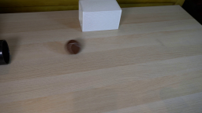
视觉工具实际返回图片 2
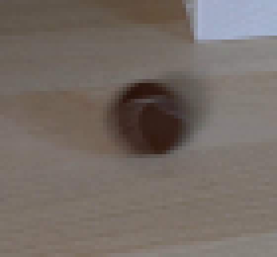
视觉工具实际返回图片 3
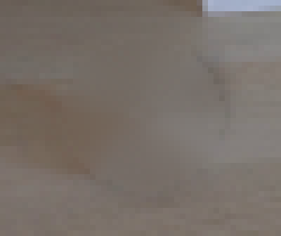
视觉工具实际返回图片 4
视觉工具实际返回图片 5
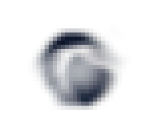
视觉工具实际返回图片 6
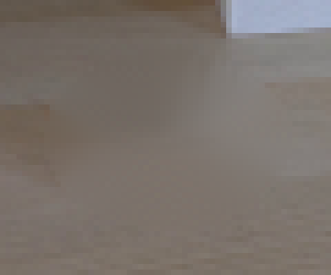
视觉工具实际返回图片 7
视觉工具实际返回图片 8
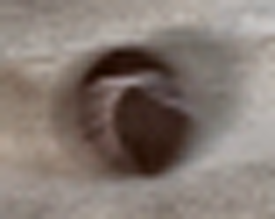
视觉工具实际返回图片 9
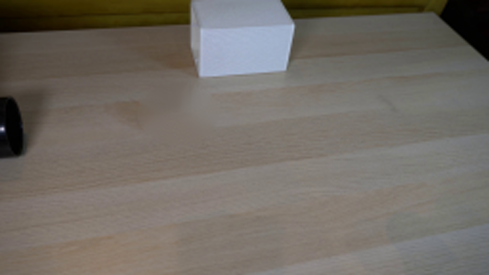
视觉工具实际返回图片 10

视觉工具实际返回图片 11
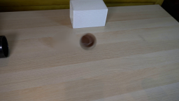
视觉工具实际返回图片 12
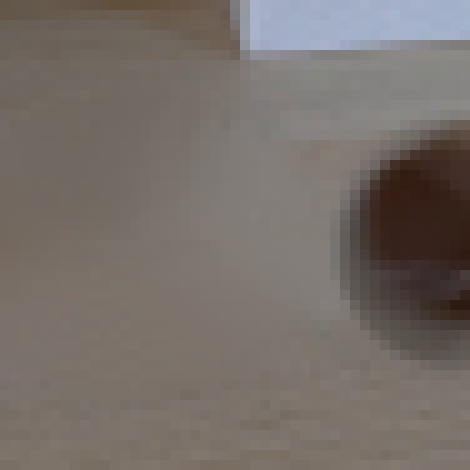
视觉工具实际返回图片 13
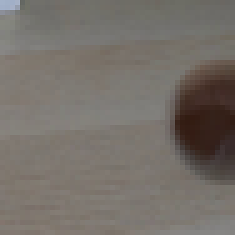
视觉工具实际返回图片 14
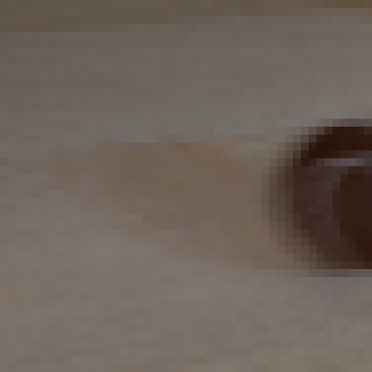
视觉工具实际返回图片 15
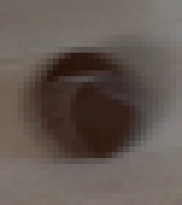
视觉工具实际返回图片 16
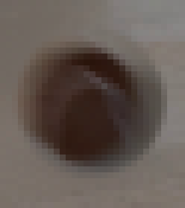
视觉工具实际返回图片 17
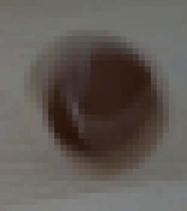
视觉工具实际返回图片 18
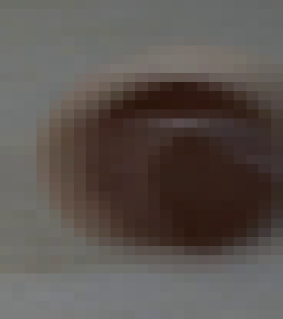
视觉工具实际返回图片 19
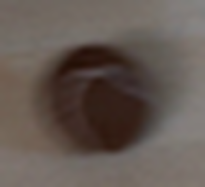
视觉工具实际返回图片 20
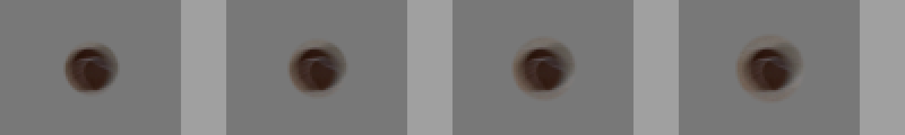
视觉工具实际返回图片 21
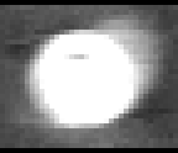
视觉工具实际返回图片 22
视觉工具实际返回图片 23
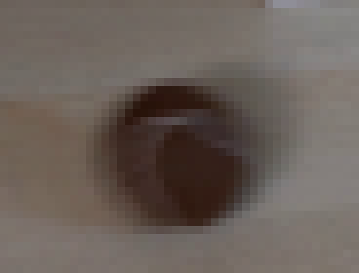
视觉工具实际返回图片 24
视觉工具实际返回图片 25
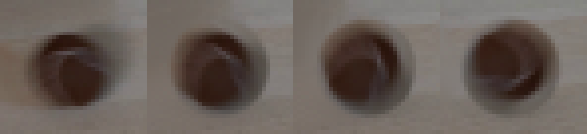
视觉工具实际返回图片 26
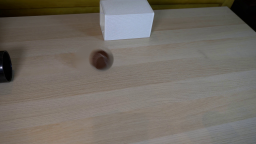
视觉工具实际返回图片 27
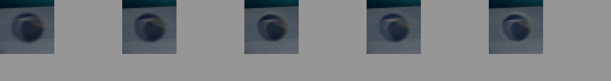
视觉工具实际返回图片 28
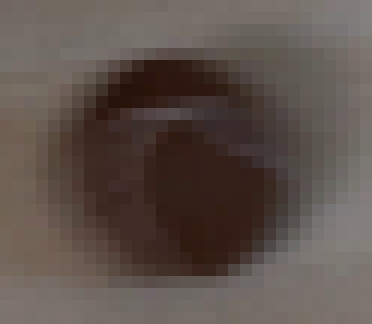
视觉工具实际返回图片 29
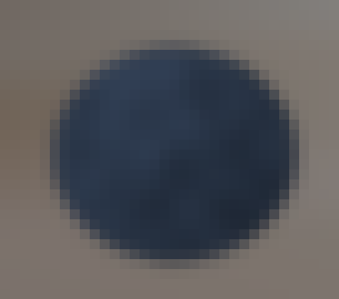
视觉工具实际返回图片 30
视觉工具实际返回图片 31
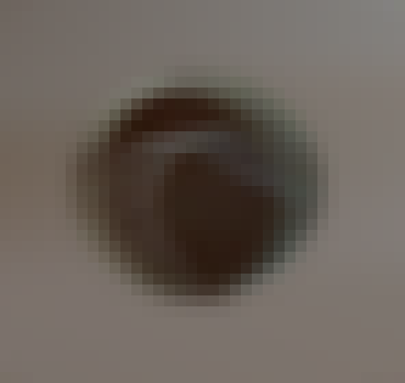
视觉工具实际返回图片 32
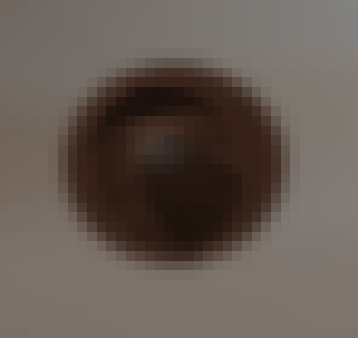
视觉工具实际返回图片 33
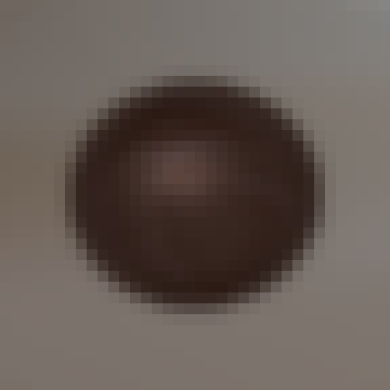
视觉工具实际返回图片 34
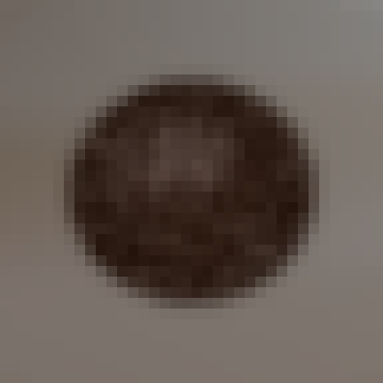
视觉工具实际返回图片 35
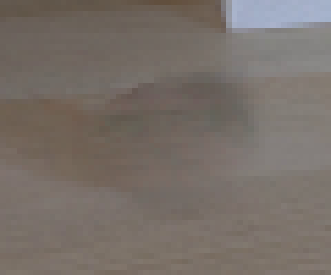
视觉工具实际返回图片 36
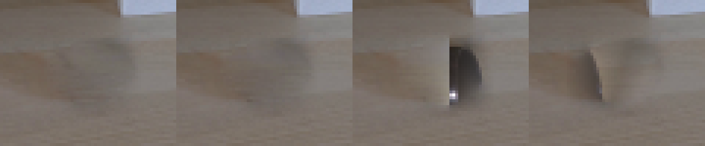
视觉工具实际返回图片 37
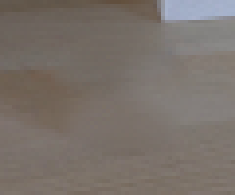
视觉工具实际返回图片 38
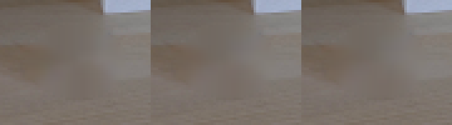
视觉工具实际返回图片 39
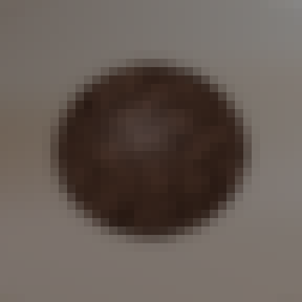
视觉工具实际返回图片 40
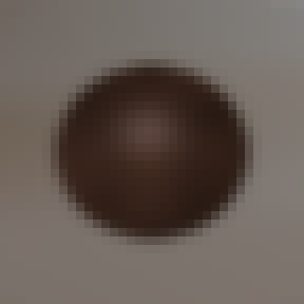
视觉工具实际返回图片 41
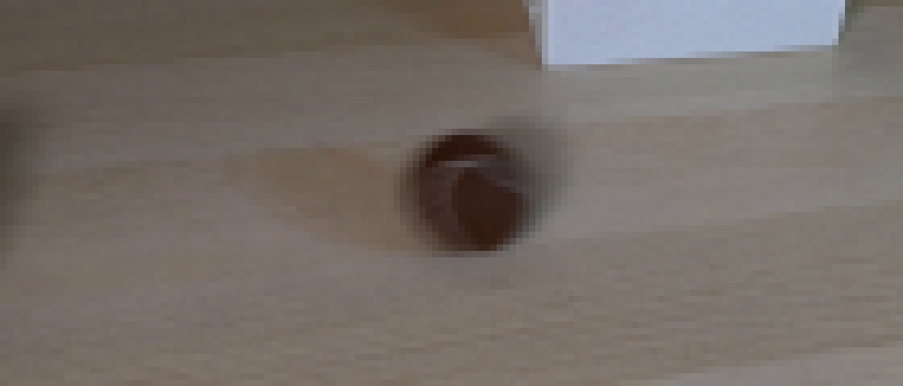
视觉工具实际返回图片 42
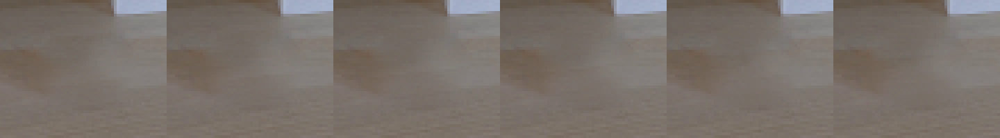
视觉工具实际返回图片 43
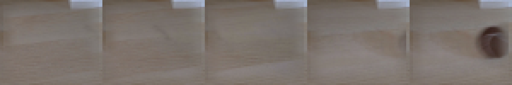
视觉工具实际返回图片 44
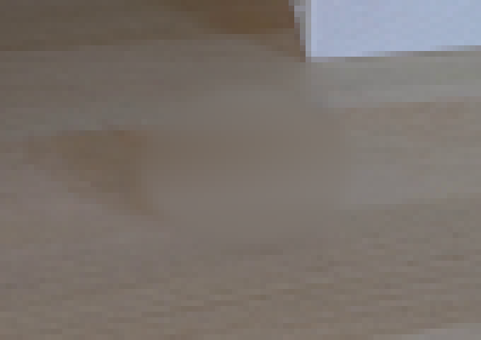
视觉工具实际返回图片 45
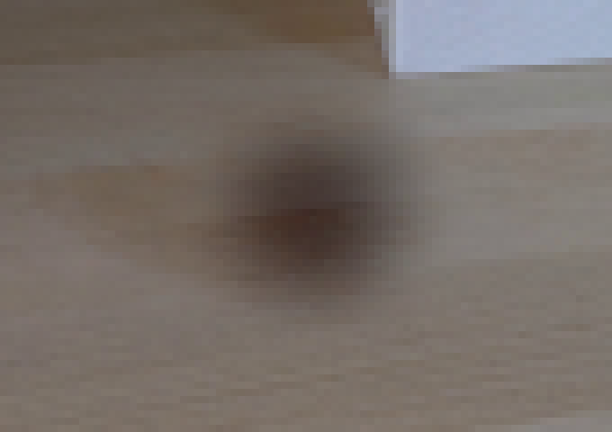
视觉工具实际返回图片 46
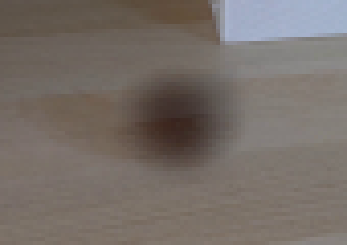
视觉工具实际返回图片 47
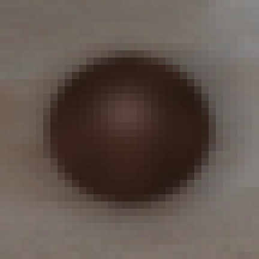
视觉工具实际返回图片 48
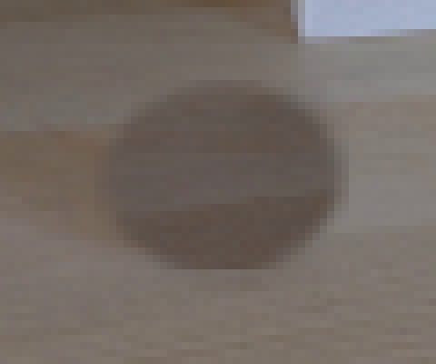
视觉工具实际返回图片 49
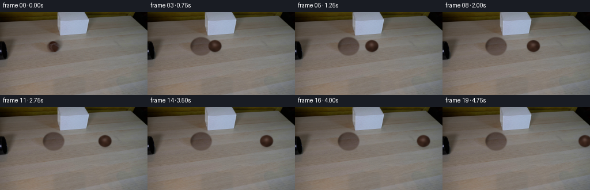
视觉工具实际返回图片 50
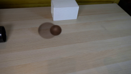
视觉工具实际返回图片 51
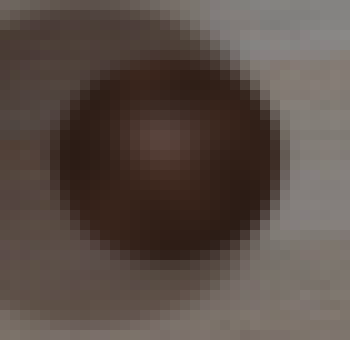
视觉工具实际返回图片 52
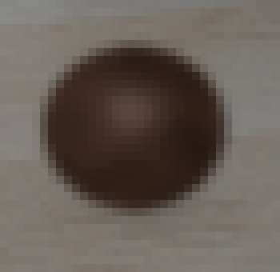
视觉工具实际返回图片 53
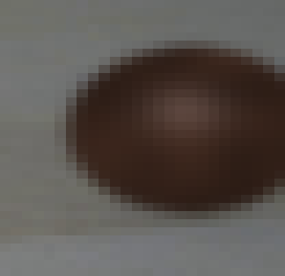
保存候选 3 份；完成命令 89 次；可验证图片返回 53 张。原始 API 响应与完整日志保留在本地。